第14章 囊泡运输、分泌与内吞
译自 Molecular Cell Biology, 第8版 · Lodish et al. · Vesicular Traffic, Secretion, and Endocytosis · 保留全部图表（点击图片可放大）
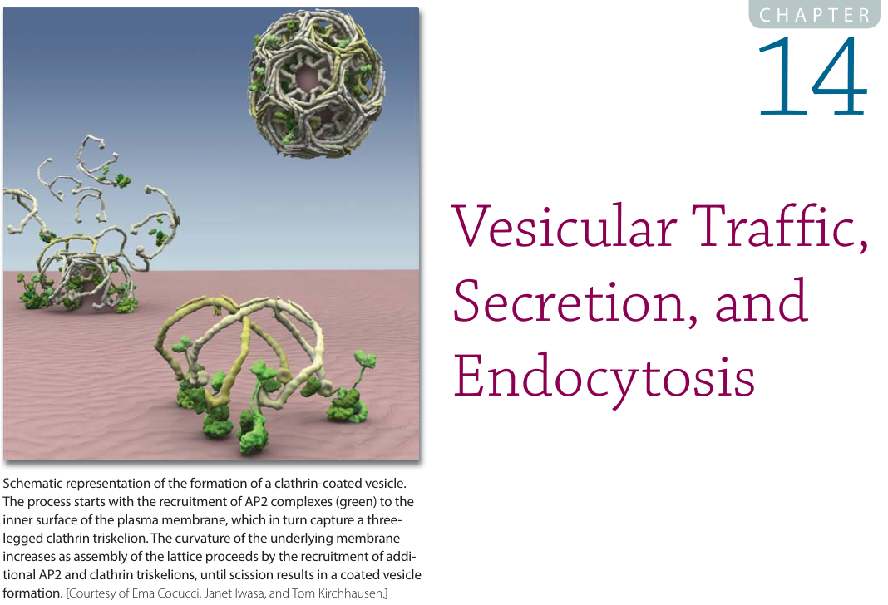
在上一章中，我们探讨了蛋白质如何被靶向到若干不同胞内膜性细胞器的膜上并跨膜转运，这些细胞器包括内质网、线粒体、叶绿体、过氧化物酶体和细胞核。在本章中，我们把注意力转向分泌途径以及囊泡运输的机制，这些机制使蛋白质得以被分泌到细胞外，或被运送到质膜和溶酶体。我们还将讨论内吞和自噬这两个相关过程，它们把来自细胞外或来自细胞质的蛋白质与小分子运送到溶酶体内部进行降解。
分泌途径之所以得名，是因为它最初是在专门的分泌细胞中被研究的，这类细胞产生并向细胞外分泌大量蛋白质，如胰岛素或消化酶。后来发现，用于蛋白质向细胞外分泌的同一途径，也被用来把所有进入内质网的可溶性蛋白和膜蛋白分配到细胞表面或溶酶体中的最终目的地。被运送到质膜的蛋白质包括细胞表面受体、摄取营养物质的转运蛋白，以及维持质膜两侧适当离子和电化学平衡的离子通道。这类膜蛋白一旦到达质膜，就始终镶嵌在质膜之中。可溶性分泌蛋白也沿分泌途径到达细胞表面，但它们并不留在膜内，而是被释放到含水的细胞外环境中。分泌蛋白的例子有消化酶、肽类激素、血清蛋白和胶原。溶酶体，正如第4章所述，是具有酸性内部的细胞器，用于降解不需要的蛋白质并储存氨基酸之类的小分子。相应地，被运送到溶酶体膜的蛋白质种类包括V型质子泵的亚基——该泵把H+从胞质溶胶泵入溶酶体的酸性腔中——以及把储存在溶酶体内的小分子释放到细胞质中的转运蛋白。经该途径运送的可溶性蛋白包括溶酶体消化酶，如蛋白酶、糖苷酶、磷酸酶和脂肪酶。
与使蛋白质得以靶向到细胞表面的分泌途径相反，内吞途径用于从细胞表面摄取物质并把它们运到细胞内部。内吞途径能够选择性地从质膜上移除蛋白质，因而参与调节质膜的蛋白质组成。此外，内吞途径还用于摄取某些营养物质，它们大到无法通过第11章讨论的任一转运机制跨质膜运输。例如，内吞途径参与摄取由低密度脂蛋白（LDL）颗粒携带的胆固醇以及由铁结合蛋白转铁蛋白携带的铁原子。此外，内吞途径还可用于从细胞表面移除受体蛋白，以此下调其活性。
有一条统一的原理支配着分泌途径和内吞途径中的所有蛋白质运输：膜蛋白和可溶性蛋白从一个膜界区室到另一个区室的运输，是由运输囊泡介导的——这些囊泡在一个区室的膜上出芽形成的芽体中收集货物蛋白，然后通过与下一个区室的膜融合，把这些货物蛋白运送到下一个区室。重要的是，当运输囊泡从一个膜上出芽并与下一个膜融合时，膜的同一面始终朝向胞质溶胶。因此，蛋白质一旦被插入内质网的膜或腔中，就可以沿分泌途径被携带，从一个细胞器移动到下一个细胞器，而不需要再跨另一层膜转运，也不会改变其在膜内的取向。类似地，内吞途径利用囊泡运输把蛋白质从质膜运送到内体和溶酶体，从而保持了它们在这些细胞器膜中的取向。图14-1概述了细胞中主要的分泌途径和内吞途径。
归结为最简单的要素，分泌途径分两个阶段运行。第一阶段发生在粗面内质网（ER）中（图14-1，步骤1）。如第13章所述，新合成的可溶性蛋白和膜蛋白被转运进入内质网，在那里折叠成正确的构象，并接受共价修饰，如N连接的糖链、O连接的糖链以及二硫键。新合成的蛋白质一旦正确折叠、并在内质网腔中获得了正确的修饰，就会进入分泌途径的第二阶段：运送到高尔基复合体并穿过它。
分泌途径的第二阶段可以概括如下。在内质网中，货物蛋白被包装进顺向（向前移动）运输囊泡（图14-1，步骤2）。这些囊泡彼此融合，形成称为顺面高尔基体网络或顺面高尔基体潴泡的扁平膜界区室（"cistern"是盛水或其他液体的容器）。某些蛋白质，主要是在内质网中发挥功能的蛋白质，可以从顺面高尔基体潴泡中被回收，并通过另一组逆向（向后移动）运输囊泡返回内质网（步骤3）。新形成的顺面高尔基体潴泡连同其蛋白质货物，以类似装配线的方式，从顺面位置（最靠近内质网）物理移动到反面位置（距内质网最远），依次先成为中间高尔基体潴泡，再成为反面高尔基体潴泡（步骤4）。这一过程称为潴泡成熟，主要涉及逆向运输囊泡（步骤5），它们把酶和其他高尔基体驻留蛋白从较晚的高尔基体潴泡回收到较早的潴泡，从而使顺面高尔基体潴泡"成熟"为中间高尔基体潴泡，并使中间高尔基体潴泡"成熟"为反面高尔基体潴泡。当分泌蛋白穿过高尔基体时，它们连接的糖链可能被位于不同高尔基体区室中的特定糖基转移酶进一步修饰。
分泌途径中的蛋白质最终被运送到一个由膜和囊泡组成的复杂网络，称为反式高尔基体网络（TGN）。反式高尔基体网络是分泌途径中的一个主要分支点。正是在这一阶段，蛋白质被装载进不同种类的囊泡，从而被运往不同的目的地。取决于蛋白质被装载进哪种囊泡，它会被运送到质膜并立即分泌、被储存起来供以后释放，或被运送到溶酶体（步骤6–8）。囊泡移动到质膜、与之融合并释放其内容物的过程称为胞吐。在所有细胞类型中，至少有一些蛋白质被连续分泌（这一过程通常称为组成型分泌），而另一些则储存在细胞内，直到胞吐信号使其释放（调节型分泌）。目的地是溶酶体的分泌蛋白先由囊泡从反式高尔基体网络运送到一个通常称为晚期内体的区室；随后这些蛋白质通过晚期内体与溶酶体膜的直接融合被转移到溶酶体。
内吞在机制上与分泌途径相关。在内吞途径中，囊泡从质膜向内出芽，把膜蛋白及其结合的配体带入细胞（见图14-1，右侧）。经内吞内化之后，一些蛋白质通过晚期内体被运送到溶酶体，而另一些则被循环回细胞表面。
在本章中，我们首先讨论那些为我们的分泌途径与内吞知识做出贡献的实验技术。然后我们聚焦于膜出芽与融合的一般机制。我们将看到，尽管不同种类的运输囊泡在形成和融合时使用各自不同的一组蛋白质，但所有囊泡都使用同样的一般机制来完成出芽、特定货物分子组的选择，以及与适当靶膜的融合。在本章余下的各节中，我们讨论分泌途径的早期阶段和后期阶段，包括如何实现对不同目的地的靶向特异性，最后讨论蛋白质如何经内吞途径被运送到溶酶体。
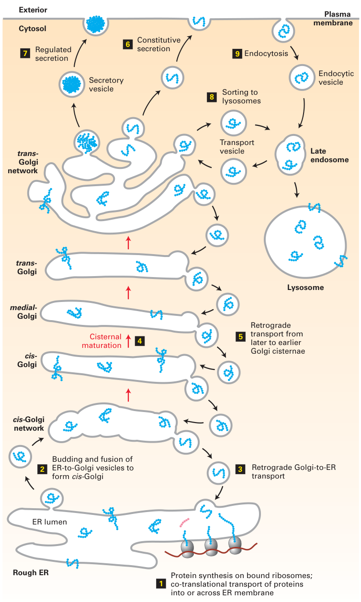
| Constitutive secretion | 组成型分泌 |
| Regulated secretion | 调节型分泌 |
| Plasma membrane | 质膜 |
| Cytosol | 胞质溶胶 |
| Rough ER | 粗面内质网 |
| ER lumen | 内质网腔 |
| cis-Golgi | 顺面高尔基体 |
| cis-Golgi network | 顺面高尔基体网络 |
| medial-Golgi | 中间高尔基体 |
| trans-Golgi | 反面高尔基体 |
| trans-Golgi network | 反式高尔基体网络（TGN） |
| Transport vesicle | 运输囊泡 |
| Secretory vesicle | 分泌囊泡 |
| Lysosome | 溶酶体 |
| Late endosome | 晚期内体 |
| Cisternal maturation | 潴泡成熟 |
14.1 研究分泌途径的技术
理解蛋白质如何穿过分泌途径各细胞器被运输的关键，在于对运输囊泡的功能做出基本描述。运输囊泡形成与融合所需的许多组分，是通过本节所述遗传学方法与生物化学方法的非凡汇聚而鉴定出来的。所有关于细胞内蛋白质运输的研究，都采用某种方法来检测给定蛋白质从一个区室到另一个区室的运输。我们先描述如何在活细胞中追踪细胞内蛋白质的运输，然后讨论已被证明有助于阐明分泌途径的遗传学体系和体外体系。
蛋白质通过分泌途径的运输可在活细胞中检测
G. Palade及其同事在20世纪60年代的经典研究，首次确立了分泌途径中蛋白质从一个细胞器移动到下一个细胞器的顺序（见经典实验14-1）。这些早期研究还表明，分泌蛋白从不被释放到胞质溶胶中——这是首个提示：被运输的蛋白质总是与某种膜界中间体相关联。在这些实验中，放射性标记的氨基酸被注射到仓鼠的胰腺中，实验结合了脉冲-追踪标记（见图3-42）和放射自显影。在注射后不同时间处死动物，立即用戊二醛固定胰腺细胞，切片并进行放射自显影，以显示放射性标记蛋白所在的位置。由于放射性氨基酸是以短脉冲方式给予的，只有注射后立即合成的那些蛋白质被标记，从而形成一个其运输可被追踪的独特被标记蛋白队列。此外，由于胰腺腺泡细胞是专门的分泌细胞，这些细胞中几乎所有被标记的氨基酸都被掺入分泌蛋白中，便于观察被运输的蛋白质。
尽管如今很少用放射自显影来定位细胞内的蛋白质，这些早期实验说明了任何区室间运输检测的两个基本要求。第一，必须标记一个早期区室中的蛋白质队列，以便随时间追踪它们随后向较晚区室的转移。第二，必须有办法鉴定被标记蛋白所在的区室。这里我们描述两种现代实验方法，用于在几乎任何类型的细胞中观察分泌蛋白的胞内运输。
在两种方法中，都是把编码水疱性口炎病毒（VSV）一种丰度较高的膜糖蛋白（G蛋白）的基因导入培养的哺乳动物细胞，方式或是转染，或是简单地用病毒感染细胞。处理过的细胞，即使并非特化于分泌的细胞，也会像合成正常的细胞分泌蛋白那样，在内质网上迅速合成VSV G蛋白。使用编码温度敏感型VSV G蛋白的突变基因，使研究人员能够开启和关闭该蛋白随后的运输。在40 °C的限制性温度下，新合成的VSV G蛋白发生错误折叠，因而被第13章所讨论的质量控制机制滞留在内质网内；而在32 °C的许可温度下，该蛋白正确折叠，并经分泌途径运送到细胞表面。重要的是，温度敏感型VSV G蛋白的错误折叠是可逆的；因此，当合成突变型VSV G蛋白的细胞在40 °C培养后再转移到32 °C时，已在内质网中积累的错误折叠突变型VSV G蛋白会重新折叠并正常运输。这种对温度敏感型突变的巧妙运用，实际上定义了一个其后续运输可被追踪的蛋白质队列。
在这一基本流程的两种变体中，VSV G蛋白的运输用不同的技术来监测。使用这两种现代运输检测的研究得出了与Palade早期实验相同的结论：在哺乳动物细胞中，一个蛋白质分子由囊泡介导从其粗面内质网上的合成位点运输到质膜，需要30至60分钟。
GFP标记的VSV G蛋白的显微镜观察 观察VSV G蛋白运输的一种方法使用一种杂合基因，其中病毒基因与编码绿色荧光蛋白（GFP）的基因融合，GFP是一种天然发荧光的蛋白（见第4章）。该杂合基因通过第6章所述的技术转染到培养细胞中。当表达该杂合蛋白（VSVG-GFP）温度敏感型形式的细胞在限制性温度下培养时，VSVG-GFP在内质网中积累；用荧光显微镜观察这些细胞时，内质网呈现为由膜构成的蕾丝状网络。随后当细胞被转移到许可温度时，可以看到VSVG-GFP首先移动到高尔基复合体的膜（这些膜密集集中在细胞核边缘），然后移动到细胞表面（图14-2a）。通过观察细胞转移到许可温度后不同时间VSVG-GFP的分布，研究人员确定了VSVG-GFP在分泌途径各细胞器中停留多久（图14-2b）。
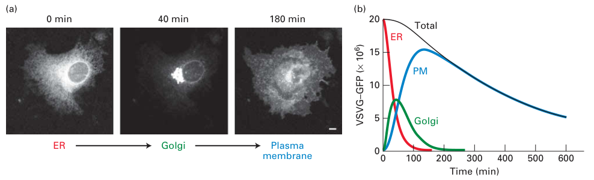
| ER | 内质网 |
| Plasma membrane | 质膜 |
| Golgi | 高尔基体 |
| PM | 质膜 |
| Total | 总计 |
| Time (min) | 时间（分钟） |
检测区室特异性的寡糖修饰 追踪分泌蛋白运输的第二种方式，利用的是分泌途径不同阶段发生的糖链侧链修饰。要理解这一方法，请回忆：许多离开内质网的分泌蛋白携带一个或多个N连接的寡糖Man8(GlcNAc)2拷贝，它们在内质网中合成并连接到分泌蛋白上（见图13-18）。当蛋白质穿过高尔基复合体时，定位于顺面、中间和反面高尔基体潴泡的不同酶，催化对这些核心Man8(GlcNAc)2糖链的一系列有序修饰，正如本章后面一节所讨论的。例如，专门驻留在顺面高尔基体区室中的糖苷酶，会依次从核心寡糖上切下甘露糖残基，产生"修剪过的"形式Man5(GlcNAc)2。科学家可以使用一种称为内切糖苷酶D的专门切糖酶，来区分仍留在内质网中的糖基化蛋白与已进入顺面高尔基体的糖基化蛋白：修剪过的顺面高尔基体特异性寡糖会被内切糖苷酶D从蛋白质上切下，而内质网中分泌蛋白上的核心（未修剪）寡糖链则抵抗这种酶的消化（图14-3a）。由于内切糖苷酶D消化产生的去糖基化蛋白在SDS凝胶上比相应的糖基化蛋白移动得快，因此这些蛋白质很容易区分（图14-3b）。
这类检测可用于追踪经放射性氨基酸脉冲标记的病毒感染细胞中VSV G蛋白的移动。标记后立即取样时，所有被标记的VSV G蛋白仍在内质网中，并且提取后抵抗内切糖苷酶D的消化，但随时间推移，提取到的糖蛋白中对消化敏感的组分比例会增加。VSV G蛋白从抗内切糖苷酶D形式向对内切糖苷酶D敏感形式的这种转变，对应于该蛋白由囊泡介导从内质网运输到顺面高尔基体。注意，无论用基于寡糖加工的检测，还是用VSVG-GFP的荧光显微镜观察来测定，VSV G蛋白从内质网到高尔基体的运输都约需30分钟（图14-3c）。人们已经开发出多种基于高尔基体较晚区室中发生的特定糖链修饰的检测方法，用来测定VSV G蛋白通过高尔基复合体各个阶段的进程。
酵母突变体界定了囊泡运输的主要阶段和许多组分
分泌途径的总体组织方式以及囊泡运输所需的许多分子组分，在所有真核细胞中都是相似的。由于这种保守性，用酵母进行的遗传学研究有助于确认分泌途径中各步骤的顺序，并鉴定出许多参与囊泡运输的蛋白质。对酵母细胞而言，正如对所有细胞一样，分泌途径对于把新蛋白质和膜运输、递送到细胞表面是必需的。因此，编码分泌途径重要组分的基因对细胞生长是必需的，只能作为条件突变体来研究，如第8章所述。尽管酵母分泌到生长培养基中的蛋白质很少，它们却持续分泌若干酶，这些酶始终定位在质膜与细胞壁之间的狭窄空间中。其中研究得最透彻的是转化酶，它把二糖蔗糖水解为葡萄糖和果糖。
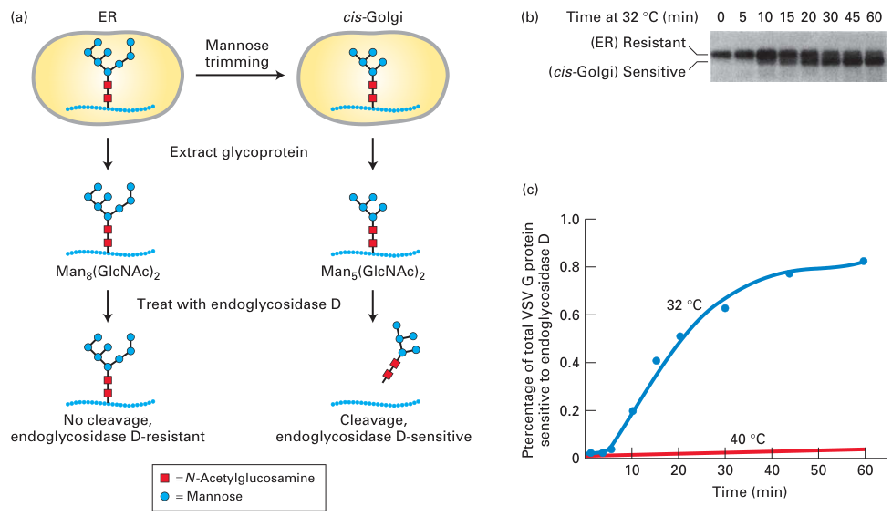
| Mannose | 甘露糖 |
| Mannose trimming | 甘露糖修剪 |
| Extract glycoprotein | 提取糖蛋白 |
| endoglycosidase D | 内切糖苷酶D |
| endoglycosidase D-resistant | 抗内切糖苷酶D |
| endoglycosidase D-sensitive | 对内切糖苷酶D敏感 |
| N-Acetylglucosamine | N-乙酰葡糖胺 |
| cis-Golgi | 顺面高尔基体 |
| ER | 内质网 |
| Resistant | 抗性（内质网） |
| Sensitive | 敏感（顺面高尔基体） |
| Time (min) | 时间（分钟） |
大量酵母突变体最初是根据它们在一个温度下能分泌蛋白质、而在更高的非许可温度下不能分泌蛋白质这一特点鉴定出来的。当这些温度敏感型分泌（sec）突变体从较低温度转移到较高温度时，它们会在分泌途径中被突变阻断的位置积累分泌蛋白。对这类突变体的分析鉴定出五个类别（A–E），其特点是蛋白质分别积累在胞质溶胶、粗面内质网、把蛋白质从内质网运往高尔基复合体的小囊泡、高尔基体潴泡或组成型分泌囊泡中（图14-4）。随后对这些不同类别sec突变体的表征，有助于阐明我们将在后面几节讨论的囊泡运输的基本组分和分子机制。
为了确定该途径中各步骤的顺序，研究人员分析了双sec突变体。例如，当酵母细胞同时含有B类和D类功能突变时，蛋白质积累在粗面内质网中，而不是高尔基体潴泡中。由于蛋白质积累在被阻断的最早步骤，这一发现表明B类突变必定作用于分泌途径中比D类突变更早的位点。这些研究证实，分泌蛋白在合成和加工过程中，依次从胞质溶胶移动到粗面内质网、移动到内质网到高尔基体的运输囊泡、移动到高尔基体潴泡、移动到分泌囊泡，最后被胞吐出去。
本节概述的三种方法勾勒出了分泌途径的主要步骤，并有助于鉴定许多负责囊泡出芽与融合的蛋白质。分泌途径中的每一个步骤目前都在被从机制上进行详细研究，而且越来越多地使用生物化学检测和分子遗传学研究，从单个蛋白质分子功能的角度来研究这些步骤中的每一个。
无细胞运输检测可剖析囊泡运输中的各个步骤
用于区室间运输的体外检测，是与酵母sec突变体研究互补的有力方法，可用于鉴定和分析负责囊泡运输的细胞组分。在这一方法的一种应用中，把缺乏某种修饰N连接寡糖链之酶的培养突变细胞（该酶位于高尔基体中）用水疱性口炎病毒感染，并追踪VSV G蛋白的命运。例如，如果被感染的细胞缺乏N-乙酰葡糖胺转移酶I，它们会产生大量VSV G蛋白，但不能像野生型细胞那样把N-乙酰葡糖胺残基加到中间高尔基体中的寡糖链上（图14-5a）。当从这种突变细胞中分离的高尔基体膜与来自野生型、未感染细胞的高尔基体膜混合时，N-乙酰葡糖胺对VSV G蛋白的添加得以恢复（图14-5b）。这种修饰是N-乙酰葡糖胺转移酶I由野生型中间高尔基体经囊泡运输到从病毒感染突变细胞中分离的顺面高尔基体的结果。这一无细胞体系中成功的区室间运输，依赖于一个正常生理过程所典型具备的条件，包括胞质溶胶提取物、以ATP和GTP形式存在的化学能源，以及在生理温度下孵育。
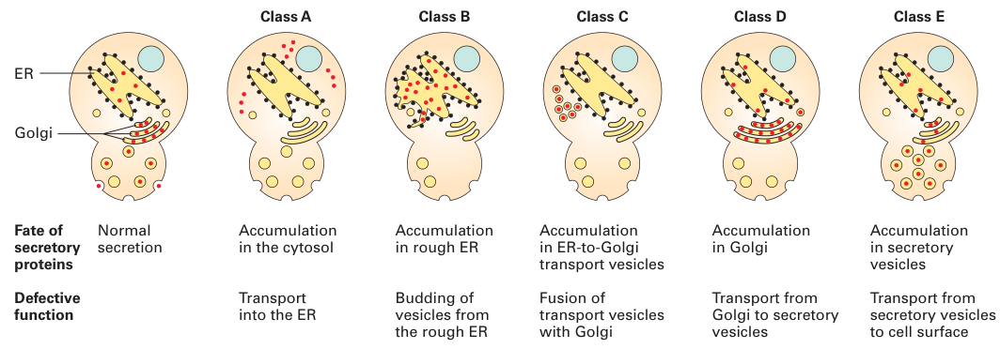
| ER | 内质网 |
| Golgi | 高尔基体 |
| Class A | A类 |
| Class B | B类 |
| Class C | C类 |
| Class D | D类 |
| Class E | E类 |
| Fate of secretory proteins | 分泌蛋白的命运 |
| Defective function | 功能缺陷 |
| Normal secretion | 正常分泌 |
| Accumulation in the cytosol | 在胞质溶胶中积累 |
| Accumulation in rough ER | 在粗面内质网中积累 |
| Accumulation in Golgi | 在高尔基体中积累 |
| Accumulation in secretory vesicles | 在分泌囊泡中积累 |
| Transport into the ER | 向内质网的运输 |
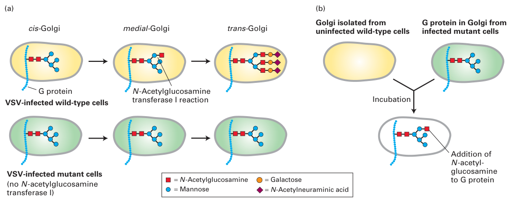
| G protein | G蛋白 |
| N-Acetylglucosamine transferase I | N-乙酰葡糖胺转移酶I |
| N-Acetylglucosamine | N-乙酰葡糖胺 |
| Mannose | 甘露糖 |
| Galactose | 半乳糖 |
| N-Acetylneuraminic acid | N-乙酰神经氨酸 |
| cis-Golgi | 顺面高尔基体 |
| medial-Golgi | 中间高尔基体 |
| trans-Golgi | 反面高尔基体 |
| Incubation | 孵育 |
| VSV-infected wild-type cells | 被VSV感染的野生型细胞 |
| VSV-infected mutant cells | 被VSV感染的突变细胞 |
此外，在适当条件下，把N-乙酰葡糖胺转移酶I从中间高尔基体运往顺面高尔基体的运输囊泡，可通过离心从供体野生型高尔基体膜中分离出来，得到均一的囊泡群体。通过检查在这些囊泡中富集的蛋白质，科学家得以鉴定出许多整合膜蛋白和周边囊泡包被蛋白，它们是这类囊泡的结构组分。此外，对无细胞反应混合物中运输所需的胞质溶胶提取物进行分级分离，使人们能够分离出运输囊泡形成所需的各种蛋白质，以及囊泡与适当受体膜靶向和融合所需的蛋白质。总体设计与图14-5所示相似的各种体外检测，已被用于研究分泌途径中的各个运输步骤。
- 所有在活细胞中追踪蛋白质经分泌途径运输的检测，都需要一种标记分泌蛋白队列的方法，以及一种鉴定被标记蛋白随后所在区室的方法。
- 用放射性氨基酸进行脉冲标记，可以特异性地标记内质网中新合成蛋白质的一个队列。另一种做法是，使用一种温度敏感型突变蛋白，它在非许可温度下因错误折叠而被滞留在内质网中，当细胞转移到许可温度时，它将作为一个队列被释放出来进行运输。
- 荧光标记蛋白沿分泌途径的运输可通过显微镜观察（见图14-2）。放射性标记蛋白的运输通常通过追踪该蛋白的区室特异性共价修饰来跟踪。
- 细胞内蛋白质运输所需的许多组分，已在酵母中通过分析在非许可温度下分泌蛋白质有缺陷的温度敏感型sec突变体而鉴定出来（见图14-4）。
- 用于区室间蛋白质运输的无细胞检测，使人们得以对分泌途径的各个步骤进行生物化学剖析。这类体外反应可用于产生纯的运输囊泡，并检验单个运输蛋白的生物化学功能。
14.2 囊泡出芽与融合的分子机制
把蛋白质从一个细胞器运送到另一个细胞器的膜包被小囊泡，是分泌途径和内吞途径中常见的元件（见图14-1）。这些囊泡从某个特定"亲代"（供体）细胞器的膜上出芽，并与某个特定"靶"（目的地）细胞器的膜融合。尽管分泌途径和内吞途径中的每一步都使用不同类型的囊泡，但采用遗传学和生物化学技术的研究已经揭示，各个不同的囊泡运输步骤不过是同一主题的变体。本节中，我们先探讨所有类型囊泡共有的囊泡出芽与融合的基本机制，然后再讨论各条途径各自特有的细节。
蛋白质包被的组装驱动囊泡的形成与货物分子的选择
囊泡从其亲代膜上出芽，是由可溶性蛋白复合体在膜上聚合形成蛋白质性的囊泡包被所驱动的（图14-6a）。整合膜蛋白的胞质溶胶侧部分与囊泡包被之间的相互作用，把适当的货物蛋白汇集到正在形成的囊泡中。因此，包被赋予膜形成囊泡所需的弯曲度，并充当过滤器决定哪些蛋白质被允许进入囊泡。
负责囊泡最终与靶膜融合的蛋白质称为v-SNARE，它们在囊泡包被组装期间被掺入囊泡膜。包被从已完成的囊泡上脱落后，嵌在囊泡膜中的v-SNARE蛋白便能够与囊泡所停靠的靶膜中的同源t-SNARE结合。这种结合使两膜紧密贴合，从而使两个双层得以融合（图14-6b）。无论靶细胞器是什么，所有运输囊泡都借助v-SNARE和t-SNARE实现融合。
目前已鉴定出三大类包被囊泡，每一类都具有不同种类的蛋白质包被，并且每一类都由一组不同的蛋白质亚基通过可逆聚合而形成（表14-1）。每一类囊泡都以其主要包被蛋白命名，把货物蛋白从特定的亲代细胞器运送到特定的靶细胞器：
● COPII囊泡把蛋白质从ER运送到高尔基体。
● COPI囊泡主要在逆向方向上运输蛋白质，即在高尔基体潴泡之间运输，以及从顺面高尔基体返回ER。
● 网格蛋白包被囊泡把蛋白质从质膜（细胞表面）和反式高尔基体网络运送到晚期内体。
人们认为每一个由囊泡介导的运输步骤都使用某种囊泡包被；然而，并非每一类囊泡都已鉴定出特定的包被蛋白复合体。
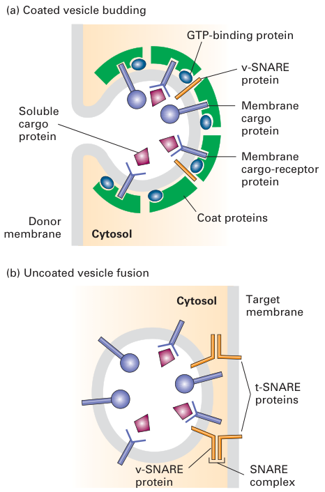
| Coat proteins | 包被蛋白 |
| GTP-binding protein | GTP结合蛋白 |
| Donor membrane | 供体膜 |
| Target membrane | 靶膜 |
| Coated vesicle budding | 包被囊泡的出芽 |
| Cargo receptor | 货物受体 |
| Membrane cargo protein | 膜货物蛋白 |
| Soluble cargo protein | 可溶性货物蛋白 |
| v-SNARE protein | v-SNARE蛋白 |
| t-SNARE proteins | t-SNARE蛋白 |
| SNARE complex | SNARE复合体 |
| Uncoated vesicle fusion | 无包被囊泡的融合 |
| Cytosol | 胞质溶胶 |
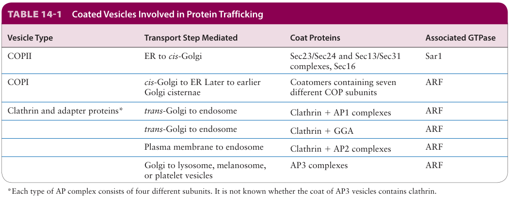
| Vesicle Type | 囊泡类型 |
| Transport Step Mediated | 所介导的运输步骤 |
| Coat Proteins | 包被蛋白 |
| Associated GTPase | 相关GTP酶 |
| COPII | COPII |
| Sar1 | Sar1 |
| COPI | COPI |
| ARF | ARF |
| Clathrin | 网格蛋白 |
| Coatomer | 包被体 |
| AP1 complexes | AP1复合体 |
| AP2 complexes | AP2复合体 |
| AP3 complexes | AP3复合体 |
例如，在组成型分泌或调节型分泌过程中把蛋白质从反式高尔基体运往质膜的囊泡，其大小和形态都很均一，这提示它们的形成是由某种规则包被结构的组装所驱动的，然而研究人员尚未鉴定出包围这些囊泡的特定包被蛋白。
图14-6a所示的囊泡出芽一般方案适用于已知的全部三类包被囊泡。用分离的膜或人工膜以及纯化的包被蛋白所做的实验表明，包被蛋白在亲代膜的胞质溶胶面上聚合，是产生运输囊泡所特有的那种高度膜弯曲（直径约50 nm）所必需的。体外出芽反应的电子显微照片常常显示出这样的结构：亲代膜上出现离散的区域，上面覆盖着致密的包被，并伴有已完成囊泡所特有的弯曲（图14-7）。这类结构通常称为囊泡芽，似乎是包被开始聚合之后、但在已完成的囊泡从亲代膜上缢断之前可见的中间体。据认为，聚合的包被蛋白黏附在膜的胞质溶胶面上，形成一个弯曲的晶格，从而驱动囊泡芽的形成。
一组保守的GTP酶开关蛋白控制不同囊泡包被的组装
利用在分离的膜与纯化的包被蛋白之间进行的体外囊泡出芽反应，科学家确定了形成三大类囊泡各自所需的最少包被组分。尽管大多数包被蛋白在不同类型囊泡之间差异很大，但三类囊泡的包被都含有一种小GTP结合蛋白，它作为调节亚基控制包被组装（见图14-6a）。一种称为ARF蛋白的GTP结合蛋白在COPI囊泡和网格蛋白包被囊泡中扮演这一角色。另一种不同但相关的GTP结合蛋白称为Sar1蛋白，存在于COPII囊泡的包被中。ARF和Sar1都是单体蛋白，其结构与Ras大体相似，Ras是一种关键的细胞内信号转导蛋白（见图16-23）。ARF和Sar1蛋白像Ras一样，都属于GTP酶超家族的开关蛋白，它们在GDP结合形式与GTP结合形式之间循环（要复习GTP酶开关蛋白的机制，见图3-34）。
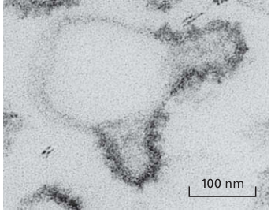
据认为，ARF和Sar1结合与水解GTP的循环控制着包被组装的启动，图14-8以COPII囊泡的组装为例示意了这一过程。首先，一种称为Sec12的ER膜蛋白催化胞质溶胶中的Sar1·GDP释放GDP并结合GTP。这种鸟嘌呤核苷酸交换因子（GEF）显然接收并整合多种迄今未知的信号，其中可能包括ER膜上出现了准备运输的货物蛋白这一信号。GTP的结合引起Sar1发生构象变化，暴露出其两亲性的N端，该N端随后嵌入磷脂双层，把Sar1·GTP系连到ER膜上（图14-8，步骤1）。附着在膜上的Sar1·GTP驱动胞质溶胶中的COPII亚基复合体在膜上聚合，最终导致囊泡芽的形成（步骤2）。COPII囊泡一旦从供体膜上释放出来，Sar1的GTP酶活性就在某个包被亚基的协助下，把囊泡膜中的Sar1·GTP水解为Sar1·GDP（步骤3）。这一水解触发COPII包被的解体（步骤4）。因此，Sar1把GTP结合与水解的循环同COPII包被的形成及随后的解离偶联在一起。
ARF蛋白经历类似的核苷酸交换与水解循环，该循环与由COPI，或由网格蛋白和其他包被蛋白（AP复合体）组成的囊泡包被的组装相偶联，这一点稍后讨论。ARF蛋白N端有一种称为肉豆蔻酸锚的共价蛋白修饰，它把ARF·GDP微弱地系连在高尔基体膜上。当附着在高尔基体膜上的GEF用GTP置换已结合的GDP后，ARF随之发生的构象变化使其N端区段中的疏水残基插入膜双层。由此形成的ARF·GTP与膜的紧密结合，成为进一步组装包被的基础。
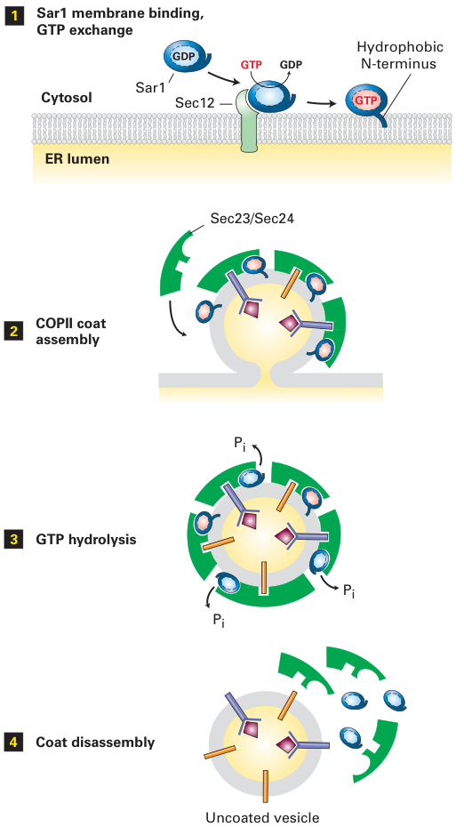
| Sec12 | Sec12 |
| Sar1 | Sar1 |
| Sar1 membrane binding, GTP exchange | Sar1的膜结合与GTP交换 |
| GDP | GDP |
| GTP | GTP |
| GTP hydrolysis | GTP水解 |
| COPII coat assembly | COPII包被组装 |
| Coat disassembly | 包被解体 |
| Sec23/Sec24 | Sec23/Sec24 |
| Uncoated vesicle | 无包被囊泡 |
| Hydrophobic N-terminus | 疏水N端 |
| ER lumen | ER腔 |
| Cytosol | 胞质溶胶 |
| Pi | Pi |
基于Sar1和ARF与其他小GTP酶开关蛋白在结构上的相似性，研究人员构建了编码这两种蛋白突变体的基因，把它们转染到培养细胞中后，对囊泡运输会产生可预测的影响。例如，在表达不能水解GTP的Sar1或ARF突变体的细胞中，囊泡包被能够形成，囊泡芽也能缢断下来。然而，由于这些突变蛋白无法触发包被解体，所有可用的包被亚基最终都永久地组装成了包被囊泡，这些囊泡不能与靶膜融合。在体外囊泡出芽反应中加入不可水解的GTP类似物，也会同样阻断包被解体。此类反应中形成的囊泡，其包被永远不会解离，因而更容易分析它们的组成和结构。图14-9所示的纯化COPI囊泡就是用这样一种出芽反应制备的。
小GTP酶在囊泡形成中的第二个普遍功能，是把已完成的囊泡从亲代膜上缢断下来。体外出芽实验表明，COPII囊泡的缢断需要Sar1 GTP酶，而COPI囊泡的缢断由ARF GTP酶驱动。这些小GTP酶究竟如何把GTP水解产生的能量转换成机械力、以完成膜的缢断，目前尚不清楚。我们将在14.4节看到，一种称为发动蛋白的大型多聚GTP酶在网格蛋白包被囊泡中扮演这一角色。
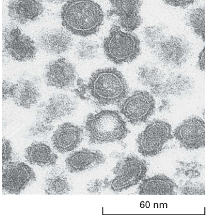
货物蛋白上的靶向序列与包被蛋白形成特异的分子接触
运输囊泡要把特定的蛋白质从一个区室运到下一个区室，囊泡芽就必须能够在潜在的膜货物蛋白和可溶性货物蛋白之间作出区分：只接纳那些应当进入下一个区室的货物蛋白，而排除那些应当作为驻留蛋白留在供体区室中的蛋白质。除了塑造供体膜的弯曲之外，囊泡包被还负责挑选特定的蛋白质作为货物。囊泡包被选择货物分子的主要机制，是直接结合膜货物蛋白胞质溶胶部分中的特定序列，即分选信号（见图14-6a）。因此，聚合的包被充当亲和基质，把选中的膜货物蛋白聚集到正在形成的囊泡芽中。由于亲代细胞器腔内的可溶性蛋白无法直接接触包被，它们需要另一类分选信号。腔内的可溶性蛋白往往含有可以看作是腔侧分选信号的序列，这些信号与某些膜货物蛋白的腔侧结构域结合。膜蛋白和可溶性蛋白中一些已知分选信号的性质总结于表14-2。我们将在后面几节更详细地描述这些信号的作用。
Rab GTP酶控制囊泡在靶膜上的停靠
第二组小GTP结合蛋白称为Rab蛋白，它们与运输囊泡结合，是把囊泡运送到适当靶膜并与之融合的关键调节因子。像Sar1和ARF一样，Rab蛋白也属于GTP酶超家族的开关蛋白。Rab蛋白还含有一个类异戊二烯锚，使它们能够被系连在囊泡膜上。活化的Rab蛋白与特定类型囊泡的结合通常分两步。第一步，胞质溶胶中的Rab·GDP被靶向到适当的囊泡，通过把其类异戊二烯锚插入囊泡膜而附着在那里。这一步附着常常由一种能与Rab·GDP及其类异戊二烯锚结合的蛋白质所促进，该蛋白通常称为鸟嘌呤核苷酸解离抑制因子（GDI）。第二步，位于囊泡膜中的一种特异性GEF把膜结合的Rab·GDP转变成Rab·GTP。一旦以这种方式被定位并激活，Rab·GTP就能够与多种不同的蛋白结合，这些蛋白称为Rab效应器。Rab·GTP与Rab效应器的结合最终可导致囊泡停靠在适当的靶膜上（图14-10a，步骤1）。囊泡融合发生后，与Rab蛋白结合的GTP被水解为GDP，触发Rab·GDP释放，随后它可以再经历一轮GDP-GTP交换、结合与水解的循环。
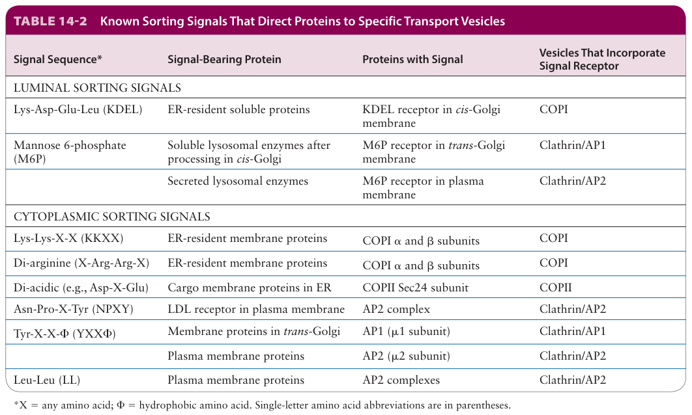
| LUMINAL SORTING SIGNALS | 腔侧分选信号 |
| CYTOPLASMIC SORTING SIGNALS | 胞质溶胶分选信号 |
| Signal Sequence | 信号序列 |
| Signal-Bearing Protein | 携带信号的蛋白 |
| Signal Receptor | 信号受体 |
| Vesicles That Incorporate Signal | 掺入信号的囊泡 |
| Lys-Asp-Glu-Leu (KDEL) | Lys-Asp-Glu-Leu（KDEL） |
| KDEL receptor in cis-Golgi membrane | 顺面高尔基体膜中的KDEL受体 |
| Mannose 6-phosphate (M6P) | 甘露糖6-磷酸（M6P） |
| M6P receptor in trans-Golgi membrane | 反式高尔基体膜中的M6P受体 |
| M6P receptor in plasma membrane | 质膜中的M6P受体 |
| LDL receptor in plasma membrane | 质膜中的LDL受体 |
| Lys-Lys-X-X (KKXX) | Lys-Lys-X-X（KKXX） |
| Di-arginine (X-Arg-Arg-X) | 双精氨酸（X-Arg-Arg-X） |
| Di-acidic (e.g., Asp-X-Glu) | 双酸性（如Asp-X-Glu） |
| Asn-Pro-X-Tyr (NPXY) | Asn-Pro-X-Tyr（NPXY） |
| Tyr-X-X-Φ (YXXΦ) | Tyr-X-X-Φ（YXXΦ） |
| Leu-Leu (LL) | Leu-Leu（LL） |
| COPI | COPI |
| COPII | COPII |
| Clathrin/AP1 | 网格蛋白/AP1 |
| Clathrin/AP2 | 网格蛋白/AP2 |
| AP2 complexes | AP2复合体 |
| AP1 (μ1 subunit) | AP1（μ1亚基） |
| AP2 (μ2 subunit) | AP2（μ2亚基） |
| α and β subunits | α和β亚基 |
关于Rab蛋白使囊泡与正确靶膜融合的一个了解得很清楚的例子，是酵母的Sec4蛋白，它专门标记分泌囊泡，使这些囊泡能够与质膜融合。相应地，表达突变型Sec4蛋白的酵母细胞会积累无法与质膜融合的分泌囊泡（图14-4中的E类突变体）。Sec4·GDP结合到分泌囊泡上，在那里被其同源GEF（它本身也位于分泌囊泡上）激活为Sec4·GTP。Sec4·GTP则与其效应器结合，后者是一个由八个亚基组成的大型系连复合体，称为胞吐复合体。Sec4·GTP的结合把分泌囊泡系连到胞吐复合体上，最终导致囊泡与质膜融合。
在哺乳动物细胞中，Rab5蛋白定位于内吞囊泡，即早期内体。这些无包被囊泡是在内吞过程中网格蛋白包被囊泡刚从质膜上出芽之后由它们形成的（见图14-1，步骤9）。在无细胞体系中，早期内体彼此的融合需要Rab5的存在，而向无细胞提取物中加入Rab5和GTP会加快这些囊泡彼此融合的速率。一种称为EEA1（早期内体抗原1）的长卷曲蛋白驻留在早期内体的膜上，充当Rab5的效应器。在这种情况下，据认为一个内吞囊泡上的Rab5·GTP会与另一个内吞囊泡膜上的EEA1特异性结合，为两个囊泡的融合创造条件。
其他Rab蛋白的效应器是马达蛋白。例如，Rab蛋白Ypt31和Ypt32像Sec4一样与分泌囊泡结合，但当处于活化的GTP结合状态时，它们把效应器肌球蛋白V招募到分泌囊泡上。肌球蛋白V使分泌囊泡能够沿着肌动蛋白丝移动到与质膜融合的位置。
每一类运输囊泡似乎都标记有一种或多种特定的Rab蛋白。这些Rab蛋白通过与膜系连蛋白和分子马达这类效应器的特异性结合，确保囊泡被导向正确的靶膜"地址"。
成对的SNARE蛋白介导囊泡与靶膜的融合
如前所述，囊泡从供体膜上出芽后不久，囊泡包被就解体，从而暴露出一种囊泡特有的膜蛋白，即v-SNARE（见图14-6b）。同样，细胞中每一类靶膜都含有t-SNARE膜蛋白，它们与v-SNARE发生特异性相互作用。在Rab介导的、把一个囊泡停靠到其靶膜上之后，同源SNARE之间的相互作用使两膜靠得足够近，从而可以融合。
了解得最清楚的SNARE介导融合的例子之一，发生在分泌蛋白的胞吐过程中（见图14-10a，步骤2和步骤3）。在这种情况下，称为VAMP（囊泡相关膜蛋白）的v-SNARE在分泌囊泡从反式高尔基体网络出芽时被掺入其中。t-SNARE是syntaxin（一种质膜中的整合膜蛋白）和SNAP-25（后者通过位于该蛋白中部的疏水脂锚附着在质膜上）。这三种SNARE蛋白各自的胞质溶胶区都含有一段重复的七肽序列，它使四条α螺旋——一条来自VAMP、一条来自syntaxin、两条来自SNAP-25——彼此缠绕，形成一个四螺旋束（图14-10b）。这个成束的SNARE复合体具有不寻常的稳定性，这源于七肽重复序列中疏水氨基酸残基与带电荷氨基酸残基的排布方式。疏水氨基酸被埋在束的中央核心，带相反电荷的氨基酸则排列成行，在螺旋之间形成有利的静电相互作用。随着多个四螺旋束形成，VAMP和syntaxin嵌在膜中的跨膜结构域把囊泡与靶膜拉到非常紧密的贴合状态。四螺旋束在能量上有利的形成，能够克服囊泡膜和靶膜中通常带负电的磷脂头基之间的静电排斥，使两个膜的疏水内部得以接触，在两层膜之间形成一个开口，并最终导致囊泡膜与靶膜融合。
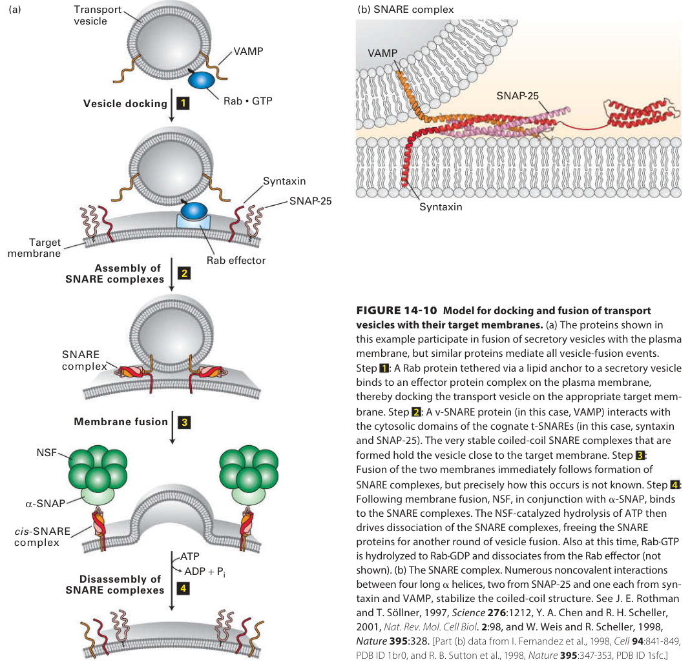
| Transport vesicle | 运输囊泡 |
| Target membrane | 靶膜 |
| VAMP | VAMP |
| Syntaxin | syntaxin |
| SNAP-25 | SNAP-25 |
| SNARE complex | SNARE复合体 |
| cis-SNARE complex | 顺式SNARE复合体 |
| Rab effector | Rab效应器 |
| NSF | NSF |
| α-SNAP | α-SNAP |
| ATP | ATP |
| ADP | ADP |
| Pi | Pi |
| Vesicle docking | 囊泡停靠 |
| Assembly of SNARE complexes | SNARE复合体的组装 |
| Membrane fusion | 膜融合 |
| Disassembly of SNARE complexes | SNARE复合体的解体 |
体外实验表明，把含有纯化VAMP的脂质体与另一些含有syntaxin和SNAP-25的脂质体一起孵育时，这两类膜会发生融合，尽管速度较慢。这一发现是有力的证据，说明由SNARE复合体形成所导致的膜紧密贴合，足以引发膜融合。而在细胞中，囊泡与靶膜的融合比在仅由SNARE蛋白催化融合的脂质体实验中更快、更高效。造成这种差异的可能原因是，在细胞中还有Rab蛋白及其效应器等其他蛋白质参与把囊泡靶向到正确的膜上。
酵母细胞像所有真核细胞一样，表达20多种彼此相关的不同v-SNARE和t-SNARE蛋白。对各个SNARE基因存在缺陷的酵母突变体所作的分析，已经确定出每一种SNARE蛋白参与的具体膜融合事件。在所有已研究过的融合事件中，SNARE都形成四螺旋成束复合体，与介导分泌囊泡和质膜融合的VAMP/syntaxin/SNAP-25复合体相似。然而在另一些融合事件中（例如COPII囊泡与顺面高尔基体网络的融合），每个参与其中的SNARE蛋白只向螺旋束贡献一条α螺旋（不像SNAP-25那样贡献两条螺旋）；在这些情况下，SNARE复合体由一个v-SNARE和三个t-SNARE分子组成。
利用体外脂质体融合分析，研究人员检验了各种单个v-SNARE与t-SNARE蛋白组合介导供体膜与靶膜融合的能力。在被测试的极大数量的不同组合中，只有少数能够高效介导膜融合。这些体外实验所揭示的有功能的v-SNARE与t-SNARE组合，与酵母细胞中介导已知膜融合事件的实际SNARE蛋白相互作用，在相当大的程度上是一致的。因此，连同Rab与Rab效应器蛋白之间相互作用的特异性一起，SNARE蛋白之间相互作用的特异性足以解释特定类型囊泡与其靶膜之间融合特异性的绝大部分，即使不是全部。
膜融合之后SNARE复合体的解离由ATP水解驱动
囊泡与其靶膜融合之后，SNARE复合体必须解离，才能使各个SNARE蛋白可以用于更多的融合事件。由于SNARE复合体很稳定，它们由大量非共价的分子间相互作用维系在一起，因此它们的解离依赖其他蛋白质以及能量的输入。
SNARE复合体的解离需要其他蛋白质协助，其第一条线索来自缺失某些胞质溶胶蛋白的体外运输反应。在这些反应中观察到的囊泡积累表明，囊泡在这些条件下能够形成，但无法与靶膜融合。最终发现，体外运输反应中囊泡的持续融合需要两种蛋白质，分别命名为NSF和α-SNAP。NSF在体内的功能可以被N-乙基马来酰亚胺（NEM）选择性地阻断，这种化学试剂与NSF上一个必不可少的–SH基团反应（NSF的名称即由此而来，意为NEM敏感因子）。
酵母突变体也增进了我们对SNARE功能的理解。C类酵母sec突变体中包括缺乏功能性Sec18或Sec17的菌株，它们分别是哺乳动物NSF和α-SNAP在酵母中的对应物。把这些C类突变体保持在非许可温度时，它们会积累从ER运往高尔基体的运输囊泡；当细胞被转移到较低的许可温度时，已积累的囊泡便能够与顺面高尔基体融合。
在最初鉴定出NSF和α-SNAP的生化和遗传研究之后，人们又开发出更精细的体外运输分析方法。利用这些更新的分析方法，研究人员证明NSF和α-SNAP蛋白并不是实际的膜融合所必需的，而是游离SNARE蛋白再生所必需的。NSF是由相同亚基组成的六聚体，它在α-SNAP（可溶性NSF附着蛋白）的协助下与SNARE复合体结合。结合上去的NSF随后水解ATP，释放出足以使SNARE复合体解离的能量（见图14-10a，步骤4）。显然，在较早的体外融合分析中以及在失去Sec17或Sec18后的酵母突变体中所观察到的囊泡融合缺陷，是因为游离的SNARE蛋白迅速被隔离在未解离的SNARE复合体中，因而无法介导膜融合。
- 三类研究得最清楚的运输囊泡——COPI、COPII和网格蛋白包被囊泡——是由构成其包被的蛋白质以及它们所介导的运输路线来区分的（见表14-1）。
- 所有类型的包被囊泡都是由胞质溶胶中的包被蛋白在亲代（供体）膜上聚合而形成的，聚合产生囊泡芽，囊泡芽最终从膜上缢断，释放出完整的囊泡。囊泡释放后不久，包被即脱落，暴露出与靶膜融合所需的蛋白质（见图14-6）。
- 属于GTP酶超家族的小GTP结合蛋白（ARF或Sar1）控制包被蛋白的聚合，这是囊泡出芽的最初步骤（见图14-8）。囊泡从供体膜释放之后，与ARF或Sar1结合的GTP发生水解，触发囊泡包被的解体。
- 供体细胞器中膜蛋白和腔侧蛋白上的特定分选信号在囊泡出芽期间与包被蛋白相互作用，从而把货物蛋白招募到囊泡中（见表14-2）。
- 第二组GTP结合蛋白即Rab蛋白，标记特定的囊泡类型并使它们能够被靶向到适当的膜。囊泡中活化的Rab·GTP可以结合某一特定类型的效应器蛋白。一类效应器是丝状的系连蛋白或大型蛋白复合体，它们把囊泡系连到靶膜上。另一类效应器是马达蛋白，它们使囊泡能够沿着细胞骨架丝移动到正确的目的地。
- 囊泡膜中的每一个v-SNARE都特异性地与靶膜中同源t-SNARE蛋白组成的复合体结合，诱导两膜融合。融合完成后，SNARE复合体在其他胞质溶胶蛋白介导的、依赖ATP的反应中解体（见图14-10）。
14.3 分泌途径的早期阶段
在本节中，我们更仔细地考察ER与高尔基体之间的囊泡运输，以及支持上一节所讨论的一般机制的一些证据。回忆一下，从ER到高尔基体的顺向运输是分泌途径中的第一个囊泡运输步骤，由COPII囊泡介导。这些囊泡含有运往高尔基体、细胞表面或溶酶体的新合成蛋白质，也含有囊泡组分，如把囊泡靶向到顺面高尔基体膜所必需的v-SNARE。蛋白质在ER与高尔基体之间的正确分选还需要从顺面高尔基体到ER的逆向运输，后者由COPI囊泡介导（图14-11）。这种逆向囊泡运输用于回收v-SNARE蛋白以及膜本身的组分，从而为从ER出芽进行更多轮囊泡出芽提供必要的材料。COPI介导的逆向运输还会从顺面高尔基体回收错误分选的ER驻留蛋白，以纠正分选错误。
本节中我们还要讨论这样一个过程：已被正确运送到高尔基体的蛋白质如何依次通过高尔基体的各个区室向前推进，从顺面高尔基体一直到达反式高尔基体网络（TGN）。这一潴泡成熟过程涉及逆向运输囊泡（而不是顺向运输囊泡）的出芽与融合。
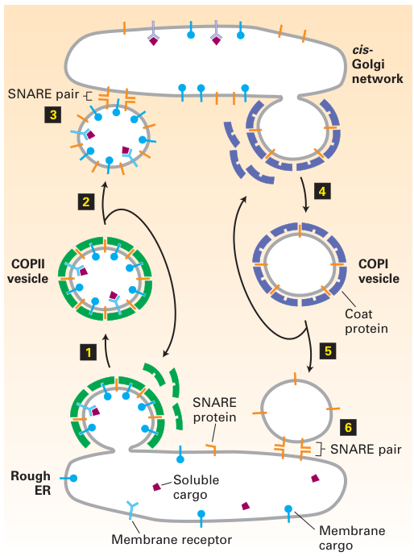
| COPII vesicle | COPII囊泡 |
| COPI vesicle | COPI囊泡 |
| Rough ER | 粗面内质网 |
| Golgi | 高尔基体 |
| cis-Golgi network | 顺面高尔基体网络 |
| SNARE pair | SNARE对 |
| SNARE protein | SNARE蛋白 |
| Membrane receptor | 膜受体 |
| Coat protein | 包被蛋白 |
| Membrane cargo | 膜货物 |
| Soluble cargo | 可溶性货物 |
COPII囊泡介导从ER到高尔基体的运输
COPII囊泡最初是在把酵母粗面ER膜的无细胞提取物与胞质溶胶以及一种不可水解的GTP类似物共同孵育时被发现的。由ER膜形成的这些囊泡带有一种独特的包被，与COPI囊泡上的包被相似，但由不同的蛋白质组成，这些蛋白质被称为COPII蛋白。带有COPII蛋白基因突变的酵母细胞属于B类sec突变体，会在粗面ER中积累蛋白质（见图14-4）。对这类突变体的分析揭示出一组COPII囊泡形成所必需的蛋白质，其中包括构成COPII囊泡包被的蛋白质。
如前所述，当ER膜中的GEF Sec12催化胞质溶胶中Sar1上结合的GDP与GTP交换时，COPII囊泡的形成就被触发。这一交换诱导Sar1结合到ER膜上，随后一个由Sec23和Sec24蛋白组成的复合体也结合上来（见图14-8）。由此形成的Sar1·GTP、Sec23与Sec24之间的三元复合体如图14-12所示。这个核心包被蛋白复合体随后为募集由Sec13和Sec31蛋白组成的第二个复合体提供结合位点，以完成包被结构。由于纯化的Sec13和Sec31蛋白能自发装配成笼状晶格，人们认为Sec13和Sec31构成了COPII囊泡的结构支架。最后，一种称为Sec16的大型纤维状蛋白结合在ER的胞质面，它与Sar1·GTP以及Sec13/31和Sec23/24复合体相互作用，把其他包被蛋白组织起来，从而提高包被聚合的效率。与Sec13/31一样，网格蛋白也有能力自装配成包被样结构，这将在14.4节中讨论。
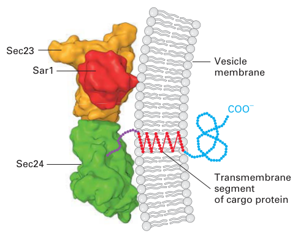
| Sec23 | Sec23 |
| Sec24 | Sec24 |
| Sar1 | Sar1 |
| Vesicle membrane | 囊泡膜 |
| Transmembrane segment of cargo protein | 货物蛋白的跨膜段 |
某些整合ER膜蛋白会被特异性地募集到COPII囊泡中，以便运输到高尔基体。其中许多蛋白的胞质段含有一个双酸性分选信号（该序列中的关键残基是天冬氨酸-X-谷氨酸，单字母代码为DXE）（见表14-2）。这一分选信号与COPII包被的Sec24亚基结合，对于某些膜蛋白从ER中的选择性输出是必需的（见图14-12）。生化和遗传学研究还鉴定出其他一些信号，它们有助于把膜货物蛋白导向COPII囊泡。所有已知的分选信号都结合到COPII的Sec24亚基上的这个或那个位点。正在进行的研究试图确定可溶性货物蛋白是如何被选择性地装载到COPII囊泡中的。例如，TANGO1是一种ER膜蛋白，它作为胶原的货物受体，同时结合腔中的胶原和包被的Sec24亚基。
遗传性疾病囊性纤维化的特征在于肺部上皮细胞中氯离子和钠离子运输失衡，导致液体潴积和呼吸困难。囊性纤维化由一种称为CFTR的蛋白质的突变引起；CFTR在ER中合成为整合膜蛋白，先被运输到高尔基体，然后被运输到上皮细胞的质膜，在质膜上作为氯离子通道发挥功能。研究人员最近表明，CFTR蛋白含有一个双酸性分选信号，该信号与COPII囊泡包被的Sec24亚基结合，并且是CFTR蛋白运出ER所必需的。最常见的CFTR突变是蛋白质序列中第508位苯丙氨酸的缺失（称为ΔF508）。这一突变通过阻断CFTR被包装进从ER出芽的COPII囊泡，阻止了CFTR向质膜的正常运输。虽然ΔF508突变并不位于双酸性分选信号附近，但这一突变可能改变CFTR胞质部分的构象，使该信号无法与Sec24结合。有趣的是，带有这一突变的折叠好的CFTR仍能正常地作为氯离子通道发挥功能。然而，它永远无法到达膜；因此疾病状态是由通道的缺失造成的，而不是由通道缺陷造成的。■
前面描述的那些实验——用荧光显微镜追踪培养的哺乳动物细胞中VSVG-GFP的转运（见图14-2）——为了解ER到高尔基体运输的中间体提供了线索。在一些细胞中，可以看到含有VSVG-GFP的荧光小囊泡从ER形成，移动不到1 μm，然后直接与顺面高尔基体融合。在另一些细胞中，ER位于距高尔基复合体数微米处，此时可以看到若干来自ER的囊泡在形成后不久就彼此融合，形成所谓的ER到高尔基体中间区室，或称顺面高尔基体网络。这些较大的结构随后沿微管运输到顺面高尔基体，这与神经元中的囊泡从细胞体（它们在此形成）沿长轴突下行到轴突末梢的方式非常相似（见第18章）。微管的功能就像"铁轨"，使这些运输囊泡的大聚集体能够长距离移动到其顺面高尔基体目的地。在ER到高尔基体中间区室形成时，一些COPI囊泡会从它上面出芽，把一些蛋白质回收到ER。
COPI囊泡介导高尔基体内部以及从高尔基体到ER的逆向运输
COPI囊泡最初是在把分离的高尔基体组分与含有胞质溶胶和一种不可水解的GTP类似物的溶液一起孵育时被发现的（见图14-9）。对这些囊泡的后续分析表明，其包被由胞质溶胶中的大型复合体形成，这些复合体称为包被体，由7个多肽亚基组成。在COPI蛋白中带有温度敏感突变的酵母细胞，在非许可温度下会在粗面ER中积累蛋白质，因此被归类为B类sec突变体（见图14-4）。尽管这些突变体的发现最初提示COPI囊泡介导ER到高尔基体的运输，但后续实验表明，它们的主要功能是逆向运输，既发生在高尔基体潴泡之间，也发生在从顺面高尔基体到粗面ER之间（见图14-11，右）。由于COPI突变体无法把关键的膜蛋白回收到粗面ER，ER逐渐耗竭那些COPII囊泡功能所必需的ER蛋白（如v-SNARE）。最终，从粗面ER形成囊泡的过程陷于停顿；分泌蛋白继续被合成，但在ER中积累——这正是B类sec突变体的定义性特征。参与COPI或COPII囊泡功能的sec突变最终都能同时阻断顺向和逆向运输，这一普遍现象说明了这两种运输过程在根本上是相互依存的。
正如第13章所讨论的，ER含有若干可溶性蛋白，专门负责折叠和修饰新合成的分泌蛋白。它们包括分子伴侣BiP和酶蛋白二硫键异构酶，这些蛋白是ER执行其功能所必需的。虽然这类ER驻留腔蛋白并不被COPII囊泡特异性地选择，但仅仅由于它们数量极多，就会被动地不断被装载进运往顺面高尔基体的囊泡中。这些可溶性蛋白由COPI囊泡介导运回ER，从而防止它们最终被耗竭。
大多数可溶性ER驻留蛋白在其C端带有一段赖氨酸-天冬氨酸-谷氨酸-亮氨酸（单字母代码为KDEL）序列（见表14-2）。若干实验已经证明，这一KDEL分选信号对于使带有该序列的蛋白质定位于ER既是必要的也是充分的。例如，当在培养的成纤维细胞中合成缺少这四个残基的突变型蛋白二硫键异构酶时，该蛋白会被分泌出去。此外，如果一种正常情况下会被分泌的蛋白质被改造，使其C端含有KDEL分选信号，那么该蛋白质就会定位于ER中。KDEL分选信号被KDEL受体识别并结合；KDEL受体是一种跨膜蛋白，主要存在于往返于ER与顺面高尔基体之间的小运输囊泡上以及顺面高尔基体膜上。此外，带有KDEL信号的可溶性ER驻留蛋白，其寡糖链上带有一些修饰，这些修饰由只存在于顺面高尔基体或顺面高尔基体网络中的酶催化；因此这些蛋白必定在某个时候离开了ER，并且至少被运输到了顺面高尔基体网络。这些发现表明，KDEL受体的主要作用是回收那些逃逸到顺面高尔基体网络的、含有KDEL分选信号的可溶性蛋白，并把它们送回ER（图14-13）。KDEL受体在较低pH下与其配体结合得更紧密；人们认为，该受体之所以能在顺面高尔基体中结合KDEL肽并在ER中释放这些肽，是因为高尔基体的pH比ER略低。
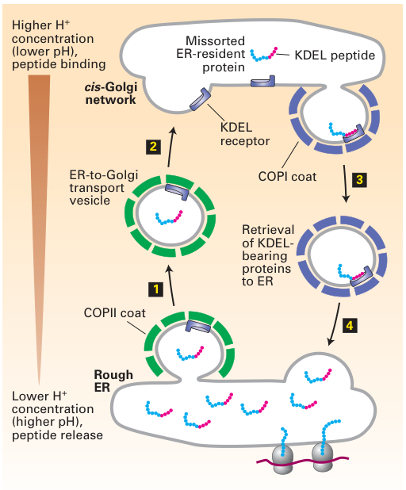
| Missorted ER-resident protein | 错误分选的ER驻留蛋白 |
| Rough ER | 粗面内质网 |
| KDEL receptor | KDEL受体 |
| KDEL peptide | KDEL肽 |
| ER-to-Golgi transport vesicle | 内质网到高尔基体的运输囊泡 |
| Higher H+ concentration (lower pH) | H+浓度较高（pH较低） |
| peptide binding | 肽结合 |
| Lower H+ concentration (higher pH) | H+浓度较低（pH较高） |
| peptide release | 肽释放 |
| Retrieval of KDEL-bearing proteins to ER | 把带KDEL的蛋白回收到ER |
| cis-Golgi network | 顺面高尔基体网络 |
| COPI coat | COPI包被 |
| COPII coat | COPII包被 |
KDEL受体以及其他从高尔基体运回ER的膜蛋白，在其面向胞质溶胶的C端片段的最末端含有一段赖氨酸-赖氨酸-X-X序列（见表14-2）。这一KKXX分选信号与COPI的α和β亚基复合体（COPI包被体中7个多肽亚基中的两个）结合，对于把膜蛋白掺入COPI囊泡以逆向运输到ER既是必要的也是充分的。缺少COPIα或COPIβ的温度敏感酵母突变体不仅无法结合KKXX信号，而且无法把带有这一信号的蛋白质运回ER，这表明COPI囊泡介导高尔基体到ER的逆向运输。
第二种把蛋白质靶向到COPI囊泡、从而实现从高尔基体回收到ER的分选信号是双精氨酸序列。KKXX分选信号必须位于蛋白质朝向胞质溶胶的C端，而与之不同，双精氨酸分选信号可以位于膜蛋白处于膜胞质面的任何片段中。
蛋白质在ER与高尔基体复合体之间的分配是一个高度动态的过程，依赖于COPII（顺向）和COPI（逆向）两种囊泡，其中每一类囊泡都负责回收另一类囊泡行使功能所必需的组分。这一分配过程的组织方式提出一个有趣的谜题：囊泡如何优先使用那些指定与正确靶膜融合的v-SNARE，而不是那些正在被回收、指定与供体膜融合的v-SNARE？
关于正确膜分配的这个基本问题，最近已在COPII囊泡中得到解答。这些囊泡形成后，COPII包被蛋白会保持装配足够长的时间，使Sec23/Sec24复合体得以与附着在顺面高尔基体膜上的一个特异性系连因子相互作用。只有在COPII囊泡已经与顺面高尔基体膜紧密缔合、且COPII的v-SNARE处于能够与其同源的t-SNARE形成复合体的位置之后，暴露v-SNARE的囊泡脱包被才告完成。虽然COPII囊泡也携带正被回收到顺面高尔基体的COPI特异性v-SNARE蛋白，但这些COPI的v-SNARE蛋白从没有机会与ER中同源的t-SNARE蛋白形成SNARE复合体。
通过高尔基体的顺向运输以潴泡成熟的方式进行
高尔基复合体组织成三个区室，通常排列成一叠扁平的囊，称为潴泡。高尔基体的各个区室因其所含的酶不同而彼此不同。这些酶中有许多是糖苷酶和糖基转移酶它们参与修饰分泌蛋白通过高尔基复合体转运时连接在其上的N-连接或O-连接糖类。总体而言，高尔基复合体的运作很像一条装配线，蛋白质依次通过各个区室，其中一个区室中已被修饰的糖链成为下一个区室的修饰酶的底物（图14-14显示了一系列有代表性的修饰步骤）。
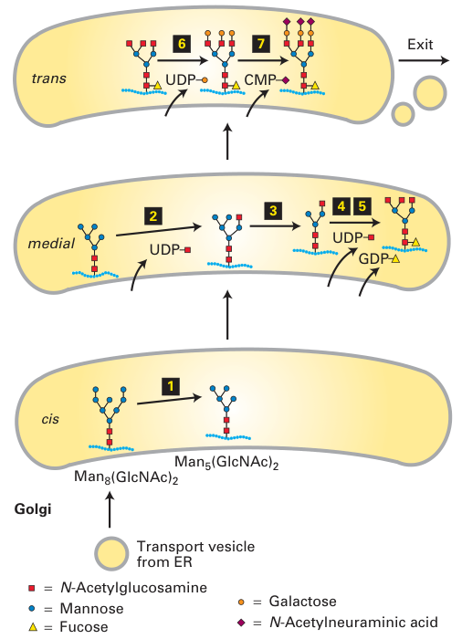
| cis-Golgi | 顺面高尔基体 |
| medial-Golgi | 中间高尔基体 |
| trans-Golgi | 反面高尔基体 |
| Transport vesicle from ER | 来自ER的运输囊泡 |
| Exit | 出口 |
| N-Acetylglucosamine | N-乙酰葡糖胺 |
| Mannose | 甘露糖 |
| Galactose | 半乳糖 |
| Fucose | 岩藻糖 |
| N-Acetylneuraminic acid | N-乙酰神经氨酸 |
| UDP | UDP |
| GDP | GDP |
| CMP | CMP |
许多年来，人们一直认为高尔基复合体本质上是一组静态的区室，由小的运输囊泡把分泌蛋白向前运送，从顺面高尔基体到中间高尔基体、再从中间高尔基体到反面高尔基体。确实，电子显微镜显示有许多与高尔基复合体相关的小囊泡，它们似乎把蛋白质从一个高尔基体区室运到另一个区室（图14-15）。然而，现在已知这些囊泡介导的是逆向运输，即从较晚的区室回收ER或高尔基体的酶，并把它们运到分泌途径中较早的区室。因此，高尔基体似乎具有高度动态的组织方式，不断形成运输囊泡，只不过方向仅是逆向的。要看这种逆向运输对高尔基体组织的影响，可以设想中间高尔基体区室所受到的净效应：来自反面高尔基体的酶移动到中间高尔基体，而中间高尔基体的酶被运到顺面高尔基体。随着这一过程持续进行，中间高尔基体从反面高尔基体获得酶，同时把中间高尔基体的酶丢失给顺面高尔基体，于是逐渐变成一个全新的反面高尔基体区室。这样，分泌货物蛋白无需通过顺向囊泡运输从一个潴泡移到另一个潴泡，就能按正确的先后顺序获得糖类修饰。
货物蛋白从顺面高尔基体到反面高尔基体的向前运输是通过这种渐进的潴泡成熟机制进行的，这方面的第一个证据来自对藻类鳞片合成的细致显微分析。这些细胞壁糖蛋白在顺面高尔基体中装配成电子显微镜下可见的大型复合体。像其他分泌蛋白一样，新制成的鳞片从顺面高尔基体移动到反面高尔基体，但它们可以比从高尔基体潴泡出芽的通常运输囊泡大20倍。类似地，在成纤维细胞合成胶原的过程中，前胶原前体的大型聚集体常常在顺面高尔基体的腔中形成（见图20-25）。前胶原聚集体太大，无法被掺入小的运输囊泡，研究人员也从未在运输囊泡中发现这类聚集体。这些观察表明，这些（也许还有所有）分泌蛋白从一个高尔基体区室到另一个区室的向前移动并不是通过小囊泡发生的。
一个特别精巧的酵母潴泡成熟演示，利用不同颜色的荧光标记同时成像两种不同的高尔基体蛋白。图14-16显示了用绿色荧光蛋白标记的顺面高尔基体驻留蛋白和用红色荧光蛋白标记的反面高尔基体驻留蛋白在同一个酵母细胞中的表现。在任一时刻，各个高尔基体潴泡似乎都具有明确的区室身份，即它们要么含有顺面高尔基体蛋白、要么含有反面高尔基体蛋白，但很少同时含有这两种蛋白。然而随着时间推移，可以看到一个被顺面高尔基体蛋白标记的潴泡逐渐失去这种蛋白并获得反面高尔基体蛋白。这一行为恰好符合潴泡成熟模型的预测：随着高尔基体驻留蛋白从较晚的高尔基体区室移动到较早的区室，单个潴泡的组成也随之改变。
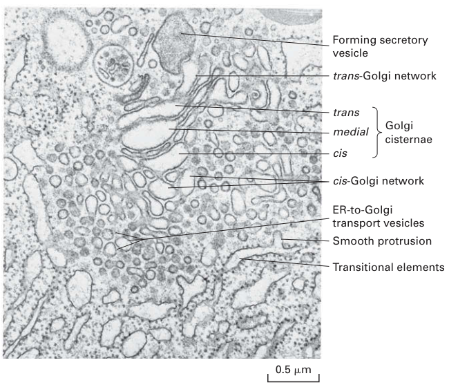
| Forming secretory vesicle | 正在形成的分泌囊泡 |
| trans-Golgi network | 反式高尔基体网络 |
| trans-Golgi | 反面高尔基体 |
| medial-Golgi | 中间高尔基体 |
| cis-Golgi | 顺面高尔基体 |
| cis-Golgi network | 顺面高尔基体网络 |
| ER-to-Golgi transport vesicles | 内质网到高尔基体的运输囊泡 |
| Smooth protrusion | 光滑突起 |
| Golgi cisternae | 高尔基体潴泡 |
| Transitional elements | 过渡元件 |
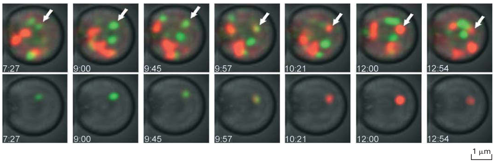
尽管大多数蛋白质运输似乎是经由潴泡成熟机制通过高尔基复合体的，但有证据表明，至少有一些从高尔基体膜出芽的COPI运输囊泡含有货物蛋白（而不是高尔基体酶），并沿顺向（而不是逆向）方向移动。
- COPII囊泡把蛋白质从粗面ER运送到顺面高尔基体；COPI囊泡则把蛋白质朝相反方向运送（见图14-11）。
- COPII包被由三个组分构成：小GTP结合蛋白Sar1、一个Sec23/Sec24复合体，以及一个Sec13/Sec31复合体。
- COPII包被的组分与膜货物蛋白结合，这些货物蛋白在其胞质区含有双酸性或其他分选信号（见图14-12）。可溶性货物蛋白很可能是通过与某种膜蛋白受体结合而被靶向到COPII囊泡的。
- 许多可溶性ER驻留蛋白含有一个KDEL分选信号。这一回收序列与顺面高尔基体膜上的一种特异性受体蛋白结合，从而把错误分选的ER蛋白募集到逆向的COPI囊泡中（见图14-13）。
- 形成COPII囊泡所需的膜蛋白可以由COPI囊泡从顺面高尔基体回收。把膜蛋白导入COPI囊泡的分选信号之一是一段KKXX序列，它与COPI包被的亚基结合。另一种独特的双精氨酸分选信号通过类似的机制发挥作用。
- COPI囊泡还会把高尔基体驻留蛋白从高尔基复合体中较晚的区室运到较早的区室。
- 可溶性蛋白和膜蛋白通过潴泡成熟在高尔基复合体中向前推进；这是一种顺向运输过程，依赖于驻留的高尔基体酶通过COPI囊泡作逆向运输。
14.4 分泌途径的后期阶段
当货物蛋白通过潴泡成熟从顺面高尔基体移向反面高尔基体时，驻留高尔基体的酶对它们的寡糖链进行修饰。COPI囊泡从较晚的高尔基体区室向较早区室的逆向运输，使这些碳水化合物修饰酶在适当的区室中维持足够的水平。最终，被正确加工的货物蛋白抵达反式高尔基体网络，即最远端的高尔基体区室。在这里，它们被分选进若干种不同的囊泡，以便运送到各自的最终目的地。每个靶目的地（如质膜、内体和溶酶体）都具有独特的脂质和膜蛋白组成，而正是反式高尔基体网络中的分选赋予这些细胞器各自独特的身份。在本节中，我们讨论从反式高尔基体网络出芽的各类囊泡、把货物蛋白分配到这些囊泡中的机制，以及分泌途径后期发生的关键加工事件。从反面高尔基体出芽的各类囊泡总结于图14-17。
网格蛋白与衔接蛋白包被的囊泡介导从反面高尔基体出发的运输
从反式高尔基体网络出芽的囊泡中，特征最清楚的那些具有双层包被：外层由纤维状蛋白网格蛋白构成，内层由衔接蛋白（AP）复合体构成。经纯化的网格蛋白分子呈三臂状，称为三脚蛋白（triskelion），此名源于希腊语"三条腿"（图14-18a）。每条臂含一条网格蛋白重链（180,000 MW）和一条网格蛋白轻链（约35,000–40,000 MW）。三脚蛋白聚合成具有内在曲率的多边形网格（图14-18b）。当网格蛋白在供体膜上聚合时，它是与AP复合体结合着进行的，AP复合体填充网格蛋白网格与膜之间的空间。每个AP复合体（340,000 MW）含四种不同的衔接亚基蛋白各一份。三脚蛋白中每条网格蛋白重链末端的球状结构域与AP复合体的一个亚基之间的特异性结合，既促进网格蛋白三脚蛋白与AP复合体的共组装，又增强组装完成的囊泡包被的稳定性。
通过与膜蛋白的胞质面结合，衔接蛋白决定哪些货物蛋白被特异性地包含进（或被排除出）正在出芽的运输囊泡。已知有三种不同的AP复合体（AP1、AP2、AP3），每种都含有四个亚基，这些亚基由不同但彼此相关的蛋白组成。最近，第二种通用的衔接蛋白类型——称为GGA——已被证明在一条70,000 MW的多肽内同时含有与网格蛋白结合和与货物结合的元件，与那些存在于大得多的异四聚体AP复合体中的元件相似。含各类衔接蛋白复合体（AP或GGA）的囊泡已被证明介导特定的运输步骤（见表14-1）。所有包被中含上述复合体之一的囊泡，都利用ARF在供体膜上起始包被组装。如前所述，ARF也起始COPI包被的组装。决定在ARF附着之后组装哪一类包被的额外膜特征或蛋白因子，目前尚不清楚。
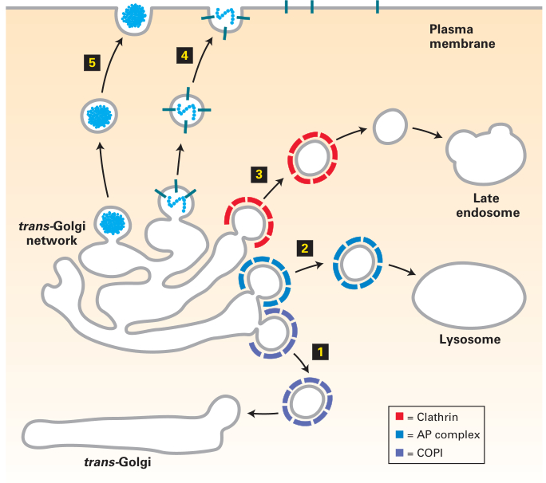
| Plasma membrane | 质膜 |
| trans-Golgi network | 反式高尔基体网络 |
| Lysosome | 溶酶体 |
| Late endosome | 晚期内体 |
| Clathrin | 网格蛋白 |
| AP complex | 衔接蛋白（AP）复合体 |
| COPI | COPI |
经晚期内体（见图14-17，步骤3）从反式高尔基体网络出芽前往溶酶体的囊泡，其网格蛋白包被与AP1或GGA结合。AP1和GGA都与供体膜中货物蛋白的胞质结构域结合。含Tyr-X-X-Φ序列的膜蛋白（其中X为任意氨基酸，Φ为体积较大的疏水性氨基酸）被招募进从反式高尔基体网络出芽的网格蛋白/AP1包被囊泡。该YXXΦ分选信号与囊泡包被中AP1的一个亚基相互作用。正如我们在下一节所讨论的，在内吞过程中从质膜出芽的网格蛋白/AP2包被囊泡也能识别YXXΦ分选信号。由GGA蛋白和网格蛋白包被的囊泡则以另一类分选序列结合货物分子。特异性结合GGA衔接蛋白的胞质分选信号包括Asp-X-Leu-Leu和Asp-Phe-Gly-X-Φ序列（其中X和Φ的定义同上）。
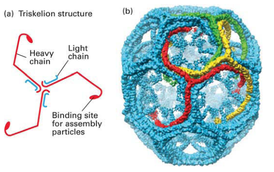
有些从反式高尔基体网络出芽的囊泡，其包被由AP3复合体构成。尽管AP3复合体确实含有与AP1和AP2复合体相似的网格蛋白结合位点，但网格蛋白对含AP3的囊泡行使功能是否必需尚不清楚，因为缺乏网格蛋白结合位点的AP3突变体似乎功能完全正常。AP3包被囊泡介导向溶酶体的运输，但它们似乎绕过晚期内体，直接与溶酶体膜融合（见图14-17，步骤2）。在某些类型的细胞中，这类AP3囊泡介导蛋白质向与溶酶体相关的特化储存区室的运输。例如，把蛋白质运送到黑素体（皮肤细胞中含黑色色素黑色素的细胞器）以及巨核细胞（可碎裂成数十个血小板的大细胞）中的血小板储存囊泡，都需要AP3。AP3的两个不同亚基中任一亚基发生突变的小鼠，不仅皮肤色素异常，还表现出出血性疾病。后者发生的原因是血小板需要正常的储存囊泡才能修复血管的破损。
发动蛋白是网格蛋白包被囊泡缢断所必需的
运输囊泡形成过程中我们尚未考虑的一个基本步骤是：囊泡芽如何从供体膜上缢断下来。就网格蛋白包被囊泡而言，一种称为发动蛋白的胞质蛋白对于完整囊泡的释放是必需的。在芽形成的后期，发动蛋白在芽的颈部周围聚合，然后水解GTP。由GTP水解获得的能量被认为驱动发动蛋白发生构象变化，使颈部被拉伸，直至囊泡缢断（图14-19）。
把细胞提取物与不可水解的GTP衍生物共孵育，为发动蛋白在内吞过程中网格蛋白/AP2包被囊泡缢断中的重要性提供了有力的证据。这种处理导致网格蛋白包被囊泡芽大量积累，这些芽的颈部异常长，被聚合的发动蛋白包围，却不能缢断（图14-20）。同样，表达不能结合GTP的发动蛋白突变体的细胞不形成网格蛋白包被囊泡，而是积累类似的、被聚合的发动蛋白包裹的长颈囊泡芽。
与COPI和COPII囊泡一样，网格蛋白包被囊泡通常在形成后不久就失去其包被。胞质Hsp70是所有真核细胞中都存在的一种组成型分子伴侣蛋白，被认为利用ATP水解获得的能量驱动网格蛋白包被解聚成三脚蛋白。就内吞囊泡而言，脱包被不仅释放出三脚蛋白以供再次用于形成更多囊泡，还暴露出v-SNARE以供与靶膜融合之用。胞质Hsp70介导的囊泡脱包被，似乎由一种辅助伴侣蛋白auxillin激活，后者含有一个可刺激Hsp70水解ATP的结构域。ARF从GTP结合态转变为GDP结合态时发生的构象变化，被认为调节网格蛋白包被解聚的时机，但Hsp70与auxillin的作用如何与ARF的开关转换相偶联，目前尚不清楚。
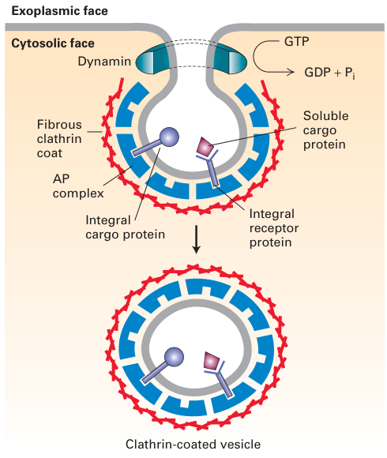
| Clathrin-coated vesicle | 网格蛋白包被囊泡 |
| Dynamin | 发动蛋白 |
| GTP | GTP |
| GDP | GDP |
| Pi | Pi |
| AP complex | 衔接蛋白（AP）复合体 |
| Cytosolic face | 胞质面 |
| Exoplasmic face | 外质面 |
| Fibrous clathrin coat | 纤维状网格蛋白包被 |
| Soluble cargo protein | 可溶性货物蛋白 |
| Integral cargo protein | 整合型货物蛋白 |
| Integral receptor protein | 整合型受体蛋白 |
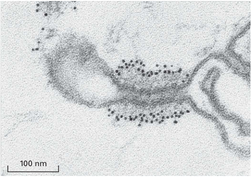
甘露糖6-磷酸残基把可溶性蛋白靶向到溶酶体
正如我们已经看到的，分泌途径中指导货物蛋白运输的许多分选信号，都是被靶向蛋白中的短氨基酸序列。相比之下，把可溶性溶酶体酶从反式高尔基体网络导向晚期内体的分选信号则是一个碳水化合物残基——甘露糖6-磷酸（M6P），它在顺面高尔基体中形成。对一个或多个在粗面内质网（ER）中预先形成的N-连接寡糖前体所进行的添加和初始加工，对溶酶体酶与对膜蛋白和分泌蛋白是相同的，都产生核心Man8(GlcNAc)2链（见图13-18）。在顺面高尔基体中，大多数溶酶体酶上的N-连接寡糖经历两步反应序列，生成M6P残基（图14-21）。把M6P残基加到可溶性溶酶体酶的寡糖链上，可阻止这些蛋白经历分泌蛋白和膜蛋白所特有的进一步加工反应（见图14-14）。
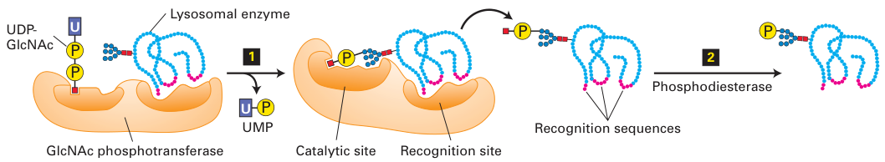
| UDP-GlcNAc | UDP-N-乙酰葡糖胺（UDP-GlcNAc） |
| GlcNAc phosphotransferase | GlcNAc磷酸转移酶 |
| Catalytic site | 催化位点 |
| Recognition site | 识别位点 |
| Phosphodiesterase | 磷酸二酯酶 |
| UMP | UMP |
| Lysosomal enzyme | 溶酶体酶 |
| Recognition sequences | 识别序列 |
如图14-22所示，带M6P的溶酶体酶与分泌蛋白和膜蛋白的分离发生在反式高尔基体网络中。在这里，跨膜的甘露糖6-磷酸受体以极高亲和力和特异性结合注定前往溶酶体的蛋白上的M6P残基。随后，含M6P受体和所结合溶酶体酶的网格蛋白/AP1包被囊泡从反式高尔基体网络出芽，失去其包被，再通过前面已描述过的机制与晚期内体融合。由于M6P受体能在反式高尔基体网络的微酸性pH（约6.5）下结合M6P，但在pH低于6时不能结合，所以所结合的溶酶体酶在晚期内体（内部pH为5.0–5.5）内被释放。此外，晚期内体中的磷酸酶通常会从溶酶体酶的M6P残基上除去磷酸，防止尽管该处pH很低仍可能发生的与M6P受体的再结合。从晚期内体出芽的囊泡（称为retromer）把M6P受体回收到反式高尔基体网络。最终，成熟的晚期内体与溶酶体融合，把溶酶体酶送达其最终目的地。
可溶性溶酶体酶在反式高尔基体网络中的分选（图14-22，步骤1–4），与许多特征与COPII和COPI囊泡所介导的蛋白质在ER与顺面高尔基体区室之间的运输相同。第一，M6P通过与供体膜中受体蛋白的腔侧结构域相互作用而充当分选信号。第二，膜内嵌的受体连同其结合的配体，通过与囊泡包被相互作用而被纳入适当的囊泡——在这里即含GGA或AP1的网格蛋白包被囊泡。第三，由于特定v-SNARE与t-SNARE之间的相互作用，这些运输囊泡只与一种特定的细胞器融合，在这里即晚期内体。最后，与所结合配体解离的胞内运输受体通过逆向囊泡运输被回收。
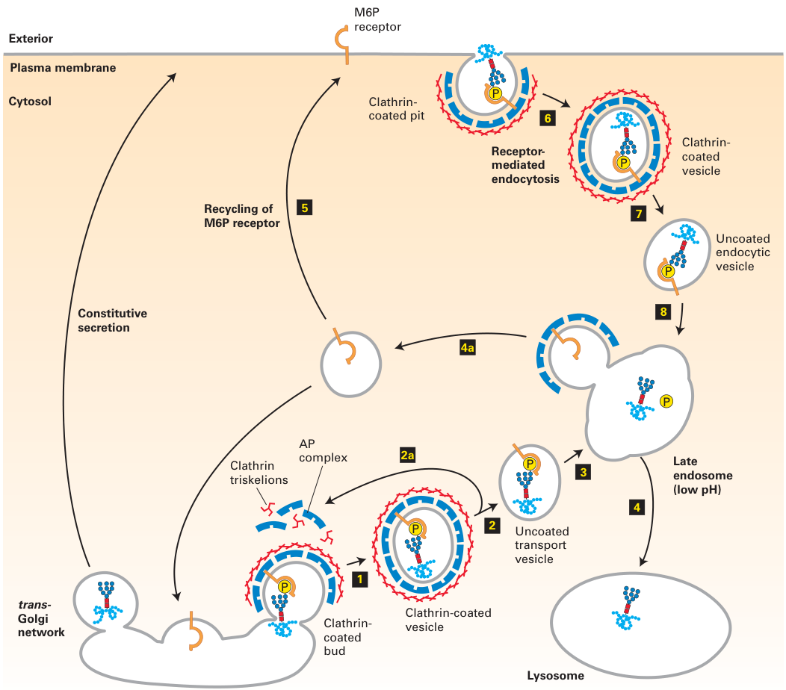
| Plasma membrane | 质膜 |
| Cytosol | 胞质溶胶 |
| trans-Golgi network | 反式高尔基体网络 |
| Exterior | 细胞外 |
| Lysosome | 溶酶体 |
| Clathrin-coated vesicle | 网格蛋白包被囊泡 |
| Clathrin triskelions | 网格蛋白三脚蛋白 |
| AP complex | 衔接蛋白（AP）复合体 |
| M6P receptor | M6P受体 |
| Uncoated transport vesicle | 脱包被运输囊泡 |
| Late endosome | 晚期内体 |
| Clathrin-coated bud | 网格蛋白包被芽 |
| Clathrin-coated pit | 网格蛋白包被小窝 |
| Receptor-mediated endocytosis | 受体介导的内吞 |
| Uncoated endocytic vesicle | 脱包被内吞囊泡 |
| Recycling of M6P receptor | M6P受体的回收 |
| Constitutive secretion | 组成型分泌 |
对溶酶体贮积症的研究揭示了溶酶体分选途径的关键组分
一类称为溶酶体贮积症的遗传病，由一种或多种溶酶体酶的缺失引起。结果，原本会被溶酶体酶降解的未消化糖脂和细胞外成分，以巨大内含物的形式在溶酶体中积累。溶酶体贮积症患者可能出现多种发育、生理和神经异常，这取决于贮积缺陷的类型和严重程度。I细胞病是一种特别严重的溶酶体贮积症，其溶酶体中缺失多种酶。患者的细胞缺乏N-乙酰葡糖胺磷酸转移酶，而该酶是顺面高尔基体中溶酶体酶上M6P残基形成所必需的（见图14-21）。把正常个体的溶酶体酶与I细胞病患者的溶酶体酶进行生化比较，导致了M6P作为溶酶体分选信号的最初发现。由于缺少这一信号，患者的溶酶体酶被分泌出去，而不是被分选到并滞留在溶酶体中。
当把I细胞病患者的成纤维细胞培养在含带M6P残基的溶酶体酶的培养基中时，患病细胞可获得接近正常的胞内溶酶体酶含量。这一发现表明，这些细胞的质膜上含有M6P受体，它们能通过受体介导的内吞把细胞外的磷酸化溶酶体酶内化。这一过程被许多细胞表面受体用来把结合的蛋白或颗粒带入细胞，将在下一节详细讨论。现已知道，即使在正常细胞中，也有一些M6P受体被运送到质膜，还有一些磷酸化溶酶体酶被分泌出去（见图14-22）。被分泌的酶可通过受体介导的内吞被收回并导向溶酶体。因此，这条途径可清除任何逃过通常M6P分选途径的溶酶体酶。
I细胞病患者的肝细胞含有正常全套的溶酶体酶，也没有内含物，尽管这些细胞在甘露糖磷酸化上有缺陷。这一发现意味着肝细胞（肝中最丰富的一种细胞）采用一条不依赖M6P的途径来分选溶酶体酶。这条途径也可能在其他细胞类型中起作用，其本质尚不清楚。■
反面高尔基体中的蛋白质聚集可能参与把蛋白质分选到调节型分泌囊泡
如本章导言所述，所有真核细胞都持续分泌某些蛋白质（组成型分泌）。特化的分泌细胞则把另一些蛋白质储存在囊泡中，只在受到特定刺激触发时才分泌它们。这种调节型分泌的一个例子发生在胰腺β细胞中：它们把新合成的胰岛素储存在特化的分泌囊泡中，并响应血糖升高而分泌胰岛素（见图16-39）。这些细胞和其他分泌细胞同时使用两种不同类型的分泌囊泡，把蛋白质从反式高尔基体网络运送到细胞表面：非调节型运输囊泡（也称组成型分泌囊泡）和调节型运输囊泡。
看来有一种共同的机制，把ACTH（促肾上腺皮质激素）、胰岛素和胰蛋白酶原等如此多样的调节型蛋白分选进调节型分泌囊泡。支持存在这种共同机制的证据来自一些实验：用重组DNA技术在已合成ACTH的垂体瘤细胞中诱导胰岛素和胰蛋白酶原的合成。在这些通常不表达胰岛素或胰蛋白酶原的细胞中，这三种蛋白都分配到相同的调节型分泌囊泡中，并在激素与垂体细胞上的受体结合、引起胞质Ca2+升高时一起被分泌。尽管这三种蛋白没有共同的氨基酸序列可作为分选序列，但它们必定具有某种共同特征，指示它们被纳入调节型分泌囊泡。
形态学证据提示，进入调节型分泌途径的分选由选择性的蛋白质聚集所控制。例如，该途径中的未成熟囊泡——即刚从反式高尔基体网络出芽的那些囊泡——含有弥散状的分泌蛋白聚集体，在电子显微镜下可见。正在出芽过程中的囊泡中也可见到这些聚集体，说明注定进入调节型分泌囊泡的蛋白质在纳入囊泡之前就选择性地聚集在一起。
另一些研究显示，哺乳动物分泌细胞的调节型分泌囊泡含有三种酸性蛋白——嗜铬粒蛋白A、嗜铬粒蛋白B和分泌粒蛋白II，它们在被认为存在于反式高尔基体网络中的离子条件（pH 6.5、1 mM Ca2+）下孵育时会一起形成聚集体；在ER的中性pH下则不形成这类聚集体。调节型分泌蛋白与嗜铬粒蛋白A、嗜铬粒蛋白B或分泌粒蛋白II的选择性共聚集，可能就是这些蛋白被分选进调节型分泌囊泡的基础。不与这些蛋白结合、因而也不形成聚集体的分泌蛋白，则默认被分选进非调节型运输囊泡。
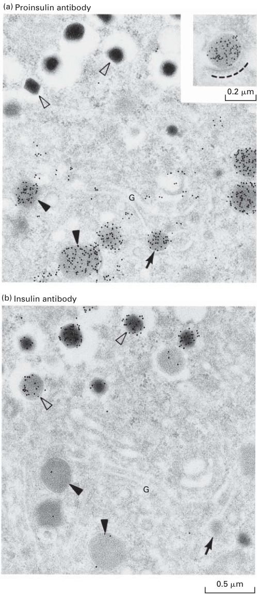
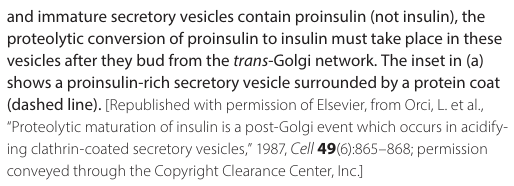
| Proinsulin antibody | 前胰岛素抗体 |
| Insulin antibody | 胰岛素抗体 |
有些蛋白质在离开反面高尔基体后经历蛋白水解加工
对于某些分泌蛋白（如生长激素）和某些病毒膜蛋白（如水疱性口炎病毒（VSV）G蛋白）而言，从新生链上切除N端ER信号序列是唯一已知的、把多肽转变为成熟活性蛋白所需的蛋白水解切割（见图13-6）。然而，有些膜蛋白和许多可溶性分泌蛋白最初合成时是相对长寿的、无活性的前体，称为前蛋白（proprotein），它们需要进一步的蛋白水解加工才能生成成熟的活性蛋白。经历这种加工的蛋白例子包括：可溶性溶酶体酶；许多膜蛋白，如流感病毒血凝素（HA）；以及血清白蛋白、胰岛素、胰高血糖素和酵母α交配因子等分泌蛋白。一般来说，前蛋白向相应成熟蛋白的蛋白水解转变，发生在前蛋白已于反式高尔基体网络中被分选进适当囊泡之后。
就可溶性溶酶体酶而言，这些称为酶原（proenzyme）的前蛋白由M6P受体以催化上无活性酶的形式分选。在晚期内体或溶酶体中，酶原经历一次蛋白水解切割，生成较小的但具有酶活性的多肽。把溶酶体酶原的激活推迟到它们抵达溶酶体之时，可防止它们在分泌途径的较早区室中消化大分子。
通常，把分泌蛋白运往细胞表面的成熟囊泡，是由若干含前蛋白的未成熟囊泡融合而成的。前胰岛素等前蛋白的蛋白水解切割，发生在囊泡离开反式高尔基体网络之后（图14-23）。大多数组成型分泌蛋白（如白蛋白）的前蛋白只在一个位点被切割一次，该位点位于一个二元碱性识别序列（如Arg-Arg或Lys-Arg）的C端一侧（图14-24a）。分泌受调节的蛋白质，其蛋白水解加工通常还需要额外的切割。就前胰岛素而言，对这条单一多肽链的多次切割产生成熟胰岛素的N端B链和C端A链（二者由二硫键连接），以及中间的C肽，后者被丢弃并随后降解（图14-24b）。
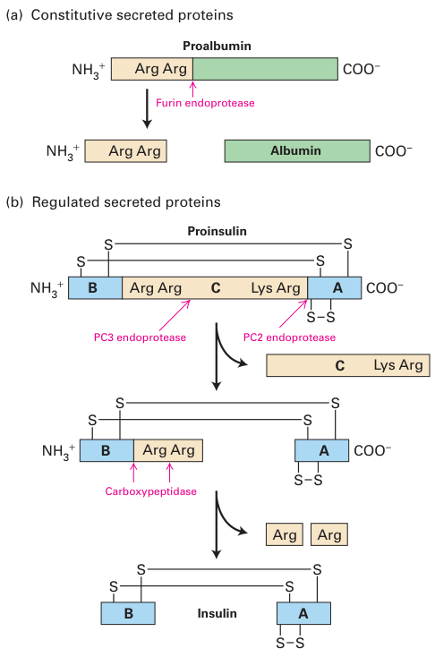
| Arg-Arg | Arg-Arg |
| Lys-Arg | Lys-Arg |
| Proalbumin | 前白蛋白 |
| Albumin | 白蛋白 |
| Proinsulin | 前胰岛素 |
| Insulin | 胰岛素 |
| Furin endoprotease | 弗林蛋白酶（furin） |
| PC2 endoprotease | PC2内切蛋白酶 |
| PC3 endoprotease | PC3内切蛋白酶 |
| Carboxypeptidase | 羧肽酶 |
| Constitutive secreted proteins | 组成型分泌蛋白 |
| Regulated secreted proteins | 调节型分泌蛋白 |
鉴定负责分泌蛋白这类加工的蛋白酶的突破，来自对KEX2基因发生突变的酵母的分析。这些突变细胞能合成α交配因子的前体，但无法把它蛋白水解加工成有功能的形态，因而不能与相反交配型的细胞交配。野生型KEX2基因编码一种内切蛋白酶，它在Arg-Arg和Lys-Arg残基的C端一侧切割α因子前体。哺乳动物含有一个与酵母KEX2蛋白同源的内切蛋白酶家族，它们都在Arg-Arg或Lys-Arg序列的C端一侧切割蛋白链。其中一个称为弗林蛋白酶（furin），存在于所有哺乳动物细胞中，负责加工白蛋白等组成型分泌的蛋白质。相比之下，PC2和PC3内切蛋白酶只存在于呈现调节型分泌的细胞中；这些酶定位于调节型分泌囊泡，并在特定位点对许多激素的前体进行蛋白水解切割。
若干途径把膜蛋白分选到极性细胞的顶端区或基底外侧区
极性上皮细胞的质膜分为两个结构域：顶端区和基底外侧区。位于两个结构域之间的紧密连接阻止质膜蛋白在二者之间移动（见图20-11）。有若干分选机制把新合成的膜蛋白导向上皮细胞的顶端区或基底外侧区，而任何一种蛋白都可能由不止一种机制来分选。由于这种分选以及紧密连接对蛋白质在质膜内移动的限制，顶端区和基底外侧区中存在着不同的蛋白质集合。某些转运蛋白的这种优先定位，对多种重要的生理功能至关重要，例如从肠腔吸收营养物质和胃腔的酸化（见图11-30和图11-31）。
显微和细胞分级分离研究表明，注定前往顶端膜或基底外侧膜的蛋白质最初一起被运送到反式高尔基体网络的膜。在某些情况下，注定前往顶端膜的蛋白质被分选进它们自己的运输囊泡，这些囊泡从反式高尔基体网络出芽后移向顶端区；而注定前往基底外侧膜的蛋白质则被分选进移向基底外侧区的另一些囊泡。不同的囊泡类型可通过其蛋白质组成来区分，包括不同的Rab和v-SNARE蛋白，它们显然把这些囊泡靶向到适当的质膜结构域。在这一机制中，蛋白质向两个结构域的分离，是在货物蛋白被纳入从反式高尔基体网络出芽的特定类型囊泡时完成的。
这种直接的基底外侧-顶端分选已在培养的Madin-Darby犬肾（MDCK）细胞——一种培养的极性上皮细胞系——中研究过（见图4-4）。在感染流感病毒的MDCK细胞中，子代病毒只从顶端膜出芽；而在感染水疱性口炎病毒的细胞中，子代病毒只从基底外侧膜出芽。这种差异的产生是因为流感病毒的HA糖蛋白只从高尔基复合体运往顶端膜，VSV G蛋白只运往基底外侧膜（图14-25）。
对特异靶向到基底外侧区的蛋白质（如VSV G蛋白）所作的突变研究，已在其胞质结构域中确定了靶向序列，这些序列可分为两大类。这些基序称为酪氨酸基序和二亮氨酸基序，与下一节将描述的、膜蛋白与网格蛋白衔接蛋白复合体结合所必需的基序相对应。这些结果有力地表明网格蛋白包被囊泡参与了蛋白质向基底外侧膜的分选。
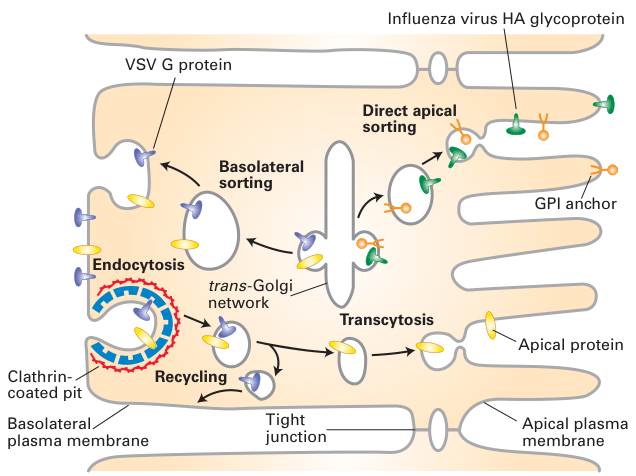
| Influenza virus HA glycoprotein | 流感病毒HA糖蛋白 |
| VSV G protein | VSV G蛋白 |
| GPI anchor | GPI锚 |
| Apical protein | 顶端蛋白 |
| Apical plasma membrane | 顶端质膜 |
| Basolateral plasma membrane | 基底外侧质膜 |
| Tight junction | 紧密连接 |
| trans-Golgi network | 反式高尔基体网络 |
| Recycling | 回收 |
| Basolateral sorting | 基底外侧分选 |
| Direct apical sorting | 直接顶端分选 |
| Transcytosis | 跨细胞转运 |
| Clathrin-coated pit | 网格蛋白包被小窝 |
| Endocytosis | 内吞 |
在高尔基体中经历类似的顶端-基底外侧分选的细胞蛋白中，有那些带糖基磷脂酰肌醇（GPI）膜锚的蛋白。在MDCK细胞和大多数其他类型的上皮细胞中，GPI锚定蛋白被靶向到顶端膜。在膜中，GPI锚定蛋白聚集到富含鞘脂的脂筏中（见第7章）。这一发现提示，在许多细胞中，脂筏与优先分配到其中的蛋白质一起定位于顶端膜。然而，GPI锚并非在所有极性细胞中都是顶端分选信号；例如在甲状腺细胞中，GPI锚定蛋白被靶向到基底外侧膜。除GPI锚之外，尚未鉴定出任何既必要又足以把蛋白质靶向到顶端区或基底外侧区的独特序列。相反，每种膜蛋白可能含有多个分选信号，其中任何一个都能把它靶向到适当的质膜结构域。对于被分选到极性上皮细胞特定质膜结构域的一系列不同蛋白质，这些复杂信号的身份以及识别它们的囊泡包被蛋白的身份，目前正在研究中。
另一种分选顶端蛋白和基底外侧蛋白的机制（也在图14-25中示出）存在于肝细胞中。肝细胞的基底外侧膜面向血液（如同肠上皮细胞的基底外侧膜），而顶端膜衬在胆汁所分泌进入的细胞间小通道中。在肝细胞中，新合成的顶端蛋白和基底外侧蛋白首先由囊泡从反式高尔基体网络运送到基底外侧区，并通过胞吐作用（即囊泡膜与质膜融合）被纳入质膜。从那里，基底外侧蛋白和顶端蛋白在同一些囊泡中被内吞，但随后它们的路径分道扬镳。
被内吞的基底外侧蛋白被分选进运输囊泡，由后者把它们回收到基底外侧膜。相比之下，目的地为顶端区的被内吞蛋白则被分选进横穿细胞、与顶端膜融合的运输囊泡，这一过程称为跨细胞转运。该过程也被用来把细胞外物质从上皮的一侧移到另一侧。即使在顶端-基底外侧蛋白分选发生在高尔基体中的上皮细胞（如MDCK细胞）中，跨细胞转运也可能提供一种校正功能：被错误分选到基底外侧膜的顶端蛋白会经历内吞，然后被正确地送达顶端膜。
- 反式高尔基体网络是分泌途径中的一个主要分支点，可溶性分泌蛋白、溶酶体蛋白，以及在某些细胞中注定前往基底外侧或顶端质膜的膜蛋白，在这里被分选进不同的运输囊泡。
- 许多从反式高尔基体网络出芽的囊泡以及内吞囊泡都带有由AP（衔接蛋白）复合体和网格蛋白构成的包被（见图14-18）。
- 网格蛋白包被囊泡的缢断需要发动蛋白，它在囊泡芽的颈部周围形成一圈领状结构，并水解GTP（见图14-19）。
- 注定前往溶酶体的可溶性酶在顺面高尔基体中，通过在寡糖链上添加多个甘露糖6-磷酸（M6P）残基而被修饰。
- 反式高尔基体网络膜中的M6P受体结合带M6P残基的蛋白质，并把它们导向晚期内体；在那里受体与其配体蛋白解离。受体随后被回收到高尔基体或质膜，而溶酶体酶被送达溶酶体（见图14-22）。
- 调节型分泌蛋白被浓缩并储存在分泌囊泡中，等待神经或激素信号以进行胞吐。反式高尔基体网络内的蛋白质聚集可能在把分泌蛋白分选到调节型分泌途径中起作用。
- 许多经分泌途径运输的前蛋白经历高尔基体后的蛋白水解切割，生成成熟的有活性蛋白质。这种蛋白水解成熟可以发生在把蛋白质从反式高尔基体网络运往细胞表面的囊泡中、晚期内体中或溶酶体中。
- 在极性上皮细胞中，注定前往质膜顶端区和基底外侧区的膜蛋白在反式高尔基体网络中被分选进不同的运输囊泡（见图14-25）。GPI锚是目前唯一鉴定出的顶端-基底外侧分选信号。
- 在肝细胞和某些其他极性细胞中，所有质膜蛋白都首先被导向基底外侧膜。目的地为顶端区的蛋白质随后被内吞，并横穿细胞移动到顶端膜（跨细胞转运）。
14.5 受体介导的内吞
在前面的小节中，我们探讨了在粗面内质网（ER）上合成的可溶性分泌蛋白与膜分泌蛋白被运送到细胞表面或其他目的地的主要途径。细胞也能从周围环境中内化物质，并把这些物质分选到特定的目的地。少数几种细胞（如巨噬细胞）能通过吞噬作用摄入整块细菌和其他大颗粒，这是一种非选择性的、由肌动蛋白介导的过程，质膜的延伸部分包裹被摄入的物质，形成称为吞噬体的大囊泡（见图17-19）。所有真核细胞都持续进行内吞，在这一过程中，质膜的一小片区域内陷，形成一个直径约0.05–0.1 μm的膜界囊泡。内吞的一种形式称为胞饮，细胞非特异性地摄入细胞外液的小液滴以及其中溶解的任何物质。不过，本节的焦点是受体介导的内吞：细胞表面的一种特异性受体与其识别的一种细胞外大分子配体紧密结合；含有受体-配体复合物的质膜区域向内出芽形成小窝，随后缢断，成为一个运输囊泡。
脊椎动物细胞通过受体介导的内吞内化的常见大分子包括含胆固醇的低密度脂蛋白（LDL）颗粒、运铁的转铁蛋白、许多蛋白激素（如胰岛素）以及某些糖蛋白。这类配体的受体介导内吞通常通过网格蛋白/AP2包被小窝和包被囊泡发生，其过程类似于反式高尔基体网络中M6P的结合对溶酶体酶的包装（见图14-22）。如前所述，有些M6P受体存在于细胞表面，这些受体参与对那些被误分泌的溶酶体酶的受体介导内吞。一般来说，参与摄取细胞外配体的跨膜受体蛋白在内吞过程中从细胞表面内化，随后被分选并回收至细胞表面，这与M6P受体被回收至质膜和反面高尔基体十分相似。配体内化的速率受细胞表面相应受体数量的限制。
在肝细胞和成纤维细胞等细胞中，网格蛋白/AP2包被小窝约占细胞表面积的2%。许多被内化的配体都曾在网格蛋白/AP2包被小窝和包被囊泡中观察到，人们认为它们是大多数（并非全部）与细胞表面受体结合的配体内吞的中间物（图14-26）。有些受体即使没有配体也成簇分布在网格蛋白包被小窝上方。另一些受体在质膜平面内自由扩散，但与配体结合时发生构象改变，因此当受体-配体复合物扩散进入网格蛋白包被小窝后就被滞留在那里。在同一个小窝或囊泡中可以见到两种或更多种与受体结合的配体，例如LDL和转铁蛋白。
细胞以大型、结构明确的脂蛋白复合物的形式从血液中摄取脂质
从肠道饮食中吸收或储存在脂肪组织中的脂质可以被分配到全身各处的细胞。为便于脂质在细胞之间的大量转移，动物演化出一种高效的方式，把数百到数千个脂质分子包装成水溶性的大分子载体，称为脂蛋白，细胞可以整体地从循环中摄取它们。脂蛋白颗粒有一个由蛋白质（载脂蛋白）构成的外壳，覆盖在含胆固醇的磷脂单层之上。这个外壳是两亲性的，因为其外表面是亲水的，使颗粒具有水溶性，而内表面是疏水的。在外壳疏水的内表面之下是中性脂质核心，主要含有胆固醇酯、甘油三酯或两者兼有。哺乳动物的脂蛋白按浮力密度的不同分为若干类别。我们在此要考虑的类别是低密度脂蛋白（LDL）。图14-27所示的一个典型LDL颗粒是直径20–25 nm的球体。其两亲性外壳由磷脂单层和一个称为apoB-100的大蛋白的单分子组成；颗粒核心则装满以胆固醇酯形式存在的胆固醇。
研究LDL颗粒如何进入细胞时，人们使用了两种通用的实验方法。第一种方法利用的是把放射性125I共价连接到酪氨酸残基侧链上而标记的LDL，这些酪氨酸残基位于LDL颗粒表面的apoB-100上。把培养细胞与标记LDL一起孵育数小时后，就可以测定有多少LDL结合在细胞表面、有多少被内化，以及LDL中apoB-100组分有多少被酶水解降解为单个氨基酸。apoB-100的降解可以通过培养介质中出现125I-酪氨酸来检测。图14-28显示了用固定浓度的125I标记LDL进行脉冲-追踪实验所测定的受体介导的细胞LDL加工过程的时间进程。这些实验清楚地证明了事件的顺序：LDL的表面结合→内化→降解。第二种方法是用一种可用电镜检测的电子致密标记物标记LDL颗粒。此类研究可以揭示LDL颗粒如何先结合到细胞表面的网格蛋白包被内吞小窝上，随后在它们内陷并出芽形成包被囊泡时仍与包被小窝结合在一起，最后被运送到内体（见图14-26）。
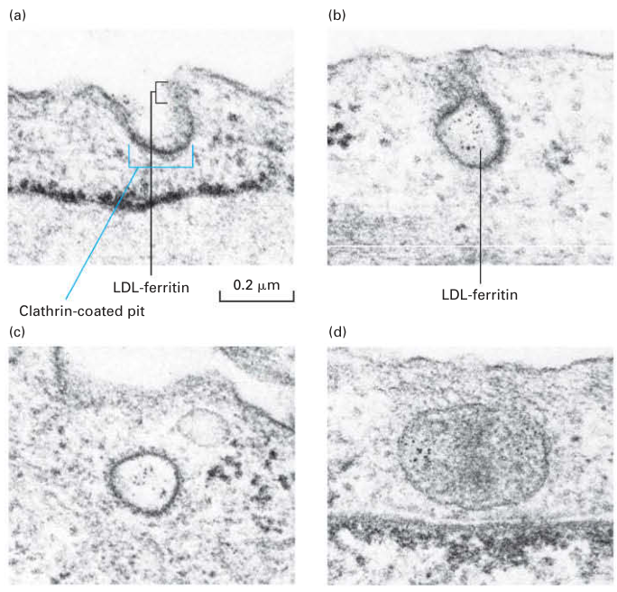
| LDL-ferritin | LDL-铁蛋白 |
| Clathrin-coated pit | 网格蛋白包被小窝 |
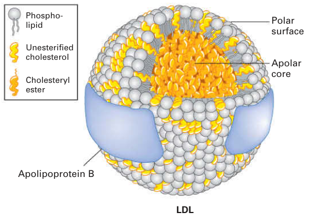
| LDL | LDL |
| Apolipoprotein B | 载脂蛋白B |
| Unesterified cholesterol | 未酯化胆固醇 |
| Cholesteryl ester | 胆固醇酯 |
| Phospholipid | 磷脂 |
| Polar surface | 极性表面 |
| Apolar core | 非极性核心 |
大分子配体的受体含有把它们导向内吞的分选信号
理解LDL颗粒如何结合到细胞表面、随后被摄入内吞囊泡的关键，是LDL受体的发现。LDL受体是一种含839个残基的糖蛋白，具有一个单次跨膜区段；它有一个短的C端胞质溶胶区段和一个长的N端外质侧区段，后者含有LDL结合结构域。七个富含半胱氨酸的重复序列构成LDL结合结构域，它与LDL颗粒中的apoB-100分子相互作用。图14-29显示了LDL受体如何通过受体介导的内吞促进LDL颗粒的内化。内化的LDL颗粒到达溶酶体后，溶酶体蛋白酶水解其表面的载脂蛋白，溶酶体胆固醇酯酶水解其核心的胆固醇酯。游离出来的未酯化胆固醇随后可以离开溶酶体，供细胞按需用于合成膜或各种胆固醇衍生物。
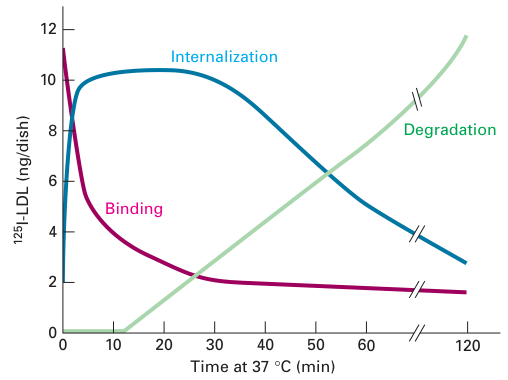
| 125I-LDL (ng/dish) | 125I-LDL（ng/皿） |
| Time at 37 °C (min) | 37℃下的时间（分钟） |
| Binding | 结合 |
| Internalization | 内化 |
| Degradation | 降解 |
对LDL受体的发现以及对其功能的理解，来自对家族性高胆固醇血症（FH）患者细胞的研究。FH是一种遗传病，其特征是血浆LDL水平升高，现已知道它由LDL受体（LDLR）基因的突变引起。携带一个正常拷贝和一个缺陷拷贝LDLR基因的患者（杂合子），血液中的LDL约升高两倍。携带两个缺陷LDLR基因的患者（纯合子）其LDL水平比正常高4到6倍。若不进行医学干预，FH杂合子通常比正常人早约10年发生心血管疾病，而FH纯合子往往在不到30岁时就死于心脏病发作。
LDLR基因的多种突变都能引起FH。有些突变阻止LDLR蛋白的合成；另一些突变妨碍受体蛋白在ER中正确折叠，导致其过早降解（见第13章）；还有一些突变降低LDL受体紧密结合LDL的能力。有一组特别有启发性的突变受体能表达在细胞表面并正常结合LDL，却不能介导已结合LDL的内化。在这类缺陷的个体中，针对其他配体的质膜受体能正常内化，但突变的LDL受体不能被招募到包被小窝中。对这种突变受体以及其他经实验产生并在成纤维细胞中表达的各种突变LDL受体的分析，鉴定出受体胞质溶胶区段中一个对受体内化至关重要的四残基基序：Asn-Pro-X-Tyr，其中X可以是任何氨基酸。这个NPXY分选信号与AP2复合体结合，把网格蛋白/AP2包被与包被小窝中LDL受体的胞质溶胶区段连接起来。NPXY信号中任何一个保守残基发生突变，都会使LDL受体失去被掺入包被小窝的能力。
少数表现出FH常见症状的个体却产生正常的LDL受体。在这些个体中，编码结合NPXY分选信号的AP2亚基蛋白的基因有缺陷。因此，LDL受体不能被掺入网格蛋白/AP2包被囊泡，LDL颗粒的内吞也受到损害。对这类遗传病患者的分析凸显了衔接蛋白在由网格蛋白包被囊泡介导的蛋白质转运中的重要性。■
突变研究表明，其他细胞表面受体可以通过YXXΦ分选信号被导向正在出芽的网格蛋白/AP2包被小窝。回忆前面讨论过的内容：同一个分选信号通过结合AP1的一个亚基，把膜蛋白招募到从反式高尔基体网络出芽的网格蛋白/AP1包被囊泡中（见表14-2）。所有这些观察结果表明，YXXΦ是把膜蛋白分选到网格蛋白包被囊泡的一个广泛使用的信号。
不过，在某些细胞表面蛋白中，其他序列（如Leu-Leu）或共价连接的泛素分子充当内吞信号。在与网格蛋白/AP2包被囊泡相关的蛋白质中，有几种含有能特异性结合泛素的结构域，因此有人推测这些囊泡相关蛋白介导了泛素化膜蛋白被选择性地掺入内吞囊泡。如下文所述，被内吞膜蛋白上的泛素标签在内吞途径的较后阶段也会被识别，并在把这些蛋白送入溶酶体内部（在那里它们被降解）的过程中发挥作用。
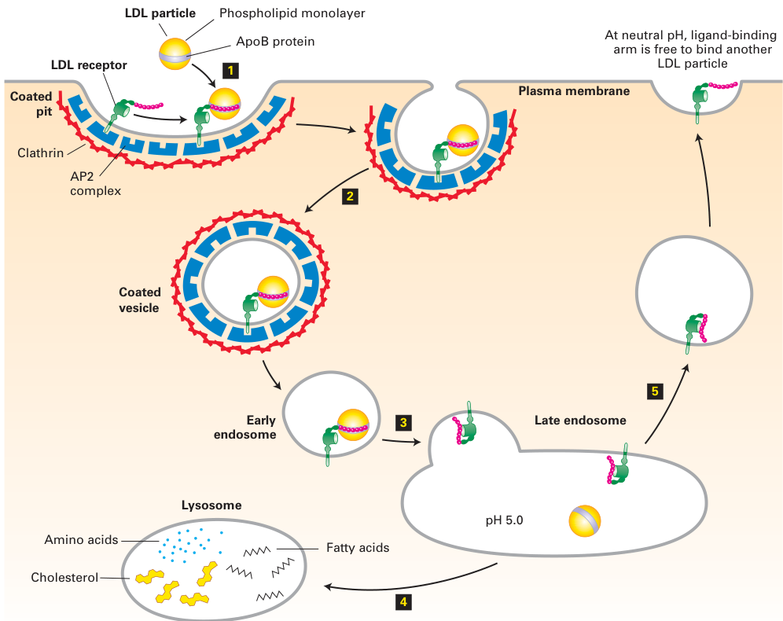
| LDL receptor | LDL受体 |
| LDL particle | LDL颗粒 |
| ApoB protein | ApoB蛋白 |
| Phospholipid monolayer | 磷脂单层 |
| Plasma membrane | 质膜 |
| Coated pit | 包被小窝 |
| Coated vesicle | 包被囊泡 |
| Clathrin | 网格蛋白 |
| AP2 complex | AP2复合体 |
| Early endosome | 早期内体 |
| Late endosome | 晚期内体 |
| Lysosome | 溶酶体 |
| Cholesterol | 胆固醇 |
| Fatty acids | 脂肪酸 |
| Amino acids | 氨基酸 |
晚期内体的酸性pH使大多数受体-配体复合物解离
质膜经内吞内化的总速率相当高：培养的成纤维细胞每小时都会内化其细胞表面蛋白和磷脂的50%。大多数发生内吞的细胞表面受体会反复把其配体送入细胞内，然后回收到质膜，再次介导配体分子的内化。例如，LDL受体每10–20分钟就进出细胞内部一次，在其20小时的生命周期中总共往返约一百次。
内化的受体-配体复合物通常沿图14-22中M6P受体和图14-29中LDL受体所示的那条途径行进。被内吞的细胞表面受体一般在晚期内体中与配体解离；晚期内体表现为位于距细胞表面数微米处的球形囊泡，带有分支状的管状膜。最早把晚期内体定义为分选区室的实验使用的是去唾液酸糖蛋白受体。这种肝特异性受体介导对异常糖蛋白的结合与内化，这些糖蛋白的寡糖末端是半乳糖而不是正常的唾液酸，因此得名去唾液酸糖蛋白。对灌注了去唾液酸糖蛋白的肝细胞所做的电镜观察显示，内化后5–10分钟，配体分子出现在晚期内体的腔中，而管状膜延伸部分则富含受体、很少含有配体。这些发现表明，晚期内体就是受体与配体解偶联的细胞器。
受体-配体复合物在晚期内体中的解离不仅发生在内吞途径中，也发生在通过分泌途径递送可溶性溶酶体酶的过程中（见图14-22）。正如第11章所讨论的，晚期内体和溶酶体的膜含有V型质子泵，它们与Cl−通道协同作用使囊泡腔酸化（见图11-14）。大多数受体，包括M6P受体以及针对LDL和去唾液酸糖蛋白的细胞表面受体，都在中性pH下紧密结合其配体，但若pH降到6.0或更低就释放配体。对于大多数被内吞的受体来说，晚期内体是它们遇到的第一个腔pH低得足以促使它们与紧密结合的配体解离的细胞器。
LDL受体释放所结合LDL颗粒的机制现已了解得很详细（图14-30）。在内体pH 5.0–5.5下，受体上一个称为β-螺旋桨结构域的区域中的组氨酸残基被质子化，形成一个能以高亲和力结合LDL结合结构域中带负电的富含半胱氨酸重复序列的位点。这种分子内相互作用把那些重复序列螯合在一种不能再同时结合apoB-100的构象中，从而使所结合的LDL颗粒被释放。
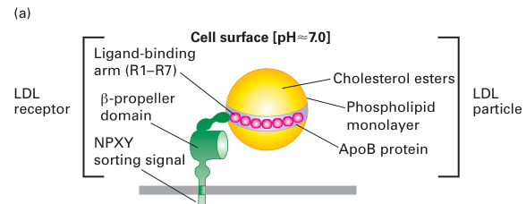
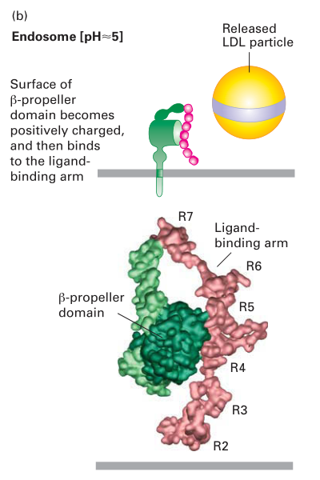
| LDL receptor | LDL受体 |
| LDL particle | LDL颗粒 |
| ApoB protein | ApoB蛋白 |
| Phospholipid monolayer | 磷脂单层 |
| Ligand-binding arm (R1–R7) | 配体结合臂（R1–R7） |
| NPXY sorting signal | NPXY分选信号 |
| Cholesterol esters | 胆固醇酯 |
| Cell surface (pH ≈ 7.0) | 细胞表面（pH ≈ 7.0） |
| Released LDL particle | 释放的LDL颗粒 |
| Endosome (pH ≈ 5) | 内体（pH ≈ 5） |
内吞途径把铁递送到细胞，而转铁蛋白–转铁蛋白受体复合物在内体中并不解离
涉及转铁蛋白受体及其配体的内吞途径与LDL途径不同，其受体-配体复合物不在晚期内体中解离。尽管如此，在功能为向细胞递送铁的转铁蛋白途径中，pH的变化同样介导受体与配体的分选。
转铁蛋白是血液中的一种主要糖蛋白，它把铁从肝（体内铁储存的主要部位）和肠（铁吸收的部位）运送到所有组织细胞。其无铁形式即脱铁转铁蛋白，能非常紧密地结合两个Fe3+离子，形成铁饱和转铁蛋白。所有哺乳动物细胞都含有细胞表面转铁蛋白受体，它们在中性pH下以高亲和力结合铁饱和转铁蛋白，随后受体结合的铁饱和转铁蛋白被内吞。与LDL颗粒的组分一样，两个Fe3+原子留在细胞内，但配体中的脱铁转铁蛋白部分并不在晚期内体中与受体解离；在被内吞后几分钟内，脱铁转铁蛋白就返回细胞表面并被分泌出细胞。
如图14-31所示，转铁蛋白受体-配体复合物这种行为的解释在于脱铁转铁蛋白具有独特的能力，能在晚期内体的低pH（5.0–5.5）下仍与转铁蛋白受体保持结合。在pH低于6.0时，两个结合的Fe3+原子从铁饱和转铁蛋白上解离，被一种位于内体中的金属还原酶还原为Fe2+，随后被一种对二价金属离子特异的转运体输出到胞质溶胶中。铁原子解离后剩下的受体-脱铁转铁蛋白复合物被回收到细胞表面。虽然脱铁转铁蛋白在pH 5.0或6.0下紧密结合其受体，但在中性pH下不结合。因此，当循环囊泡与质膜融合、受体-配体复合物遇到细胞外间质液或生长介质的中性pH时，所结合的脱铁转铁蛋白便从转铁蛋白受体上解离。回收的受体随后可自由结合另一个铁饱和转铁蛋白分子，而释放的脱铁转铁蛋白则随血流被运到肝或肠，重新装载铁。
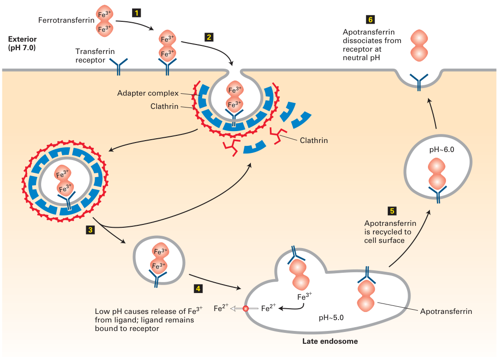
| Ferrotransferrin | 铁饱和转铁蛋白 |
| Transferrin receptor | 转铁蛋白受体 |
| Apotransferrin | 脱铁转铁蛋白 |
| Exterior (pH 7.0) | 外部（pH 7.0） |
| Adapter complex | 衔接蛋白复合体 |
| Clathrin | 网格蛋白 |
| Late endosome | 晚期内体 |
| Fe3+ | Fe3+ |
| Fe2+ | Fe2+ |
- 某些与特异性细胞表面受体结合的细胞外配体，连同其受体一起，在包被中还含有AP2复合物的网格蛋白包被囊泡中被内化（见图14-26）。
- 细胞表面受体胞质结构域中的分选信号把它们导向网格蛋白/AP2包被小窝以便内化。已知的信号包括Asn-Pro-X-Tyr、Tyr-X-X-Φ和Leu-Leu序列（见表14-2）。
- 内吞途径把某些配体（如LDL颗粒）递送到溶酶体，在那里它们被降解。来自细胞表面的运输囊泡先与晚期内体融合，晚期内体随后与溶酶体融合。
- 大多数受体-配体复合物在晚期内体的酸性环境中解离；受体被回收到质膜，而配体则被分选到溶酶体（见图14-29）。
- 铁通过一条内吞途径被输入细胞，在这一途径中Fe3+离子在晚期内体内从铁饱和转铁蛋白上释放。剩下的受体-脱铁转铁蛋白复合物被回收到细胞表面，在那里解离，释放出受体和脱铁转铁蛋白供再次使用。
14.6 将膜蛋白与胞质溶胶物质导向溶酶体
溶酶体的主要功能是降解细胞摄取的细胞外物质，并在一定条件下降解细胞内的组分。待降解的物质必须被运送到溶酶体腔，各种降解酶就驻留在那里。正如我们刚刚看到的，在晚期内体中与受体解离的内吞配体（如LDL颗粒），随后在晚期内体的膜与溶酶体的膜融合时进入溶酶体腔（见图14-29）。同样，携带细菌或其他颗粒物质的吞噬体也能与溶酶体融合，将其内容物释放到腔中以便降解。
本章讨论的一般囊泡运输机制如何被用来把内体细胞器的腔内含物运送到溶酶体腔中降解，这一点是显而易见的。然而，通过本章讨论的典型囊泡运输过程运送到溶酶体的膜蛋白，最终应被运送到溶酶体的膜上。那么，膜蛋白是如何被运送到溶酶体内部进行降解的呢？正如我们将在本节看到的，细胞有两条专门的途径把物质运送到溶酶体腔中降解：一条针对膜蛋白，一条针对胞质溶胶物质。第一条途径用于降解内吞而来的膜蛋白，它使用一种不寻常的囊泡，这种囊泡向心出芽进入内体腔，从而产生多囊内体。第二条途径称为自噬，它涉及一种称为自噬体的双膜细胞器的从头形成，自噬体包裹胞质溶胶物质，如可溶性胞质溶胶蛋白，有时也包裹细胞器，如过氧化物酶体或线粒体。两条途径最终都导致多囊内体或自噬体与溶酶体融合，把这些细胞器的内容物送入溶酶体腔中降解。
多囊内体把注定进入溶酶体膜的膜蛋白与注定被溶酶体降解的蛋白分开
驻留的溶酶体膜蛋白，如V型质子泵和氨基酸转运蛋白，能够执行其功能并留在溶酶体膜中，在那里它们受到保护，不被腔中的可溶性水解酶降解。这类蛋白由运输囊泡运送到溶酶体膜，这些囊泡从反式高尔基体网络或内体出芽，使用的基本机制与前面几节所述的相同。相反，那些将被降解的内吞膜蛋白，则通过一种专门的运送机制被整体转移到溶酶体内部。细胞表面受体被溶酶体降解，是细胞控制自身对细胞外信号分子敏感性的一种常见机制（见第15章）。受损的受体也会被靶向到溶酶体降解。
膜能够被运送到膜包被区室的腔内这一点的早期证据，来自在内体和溶酶体内显示有膜囊泡和膜碎片的电镜照片。酵母中的平行实验揭示，靶向到液泡（酵母中相当于溶酶体的细胞器）的内吞受体蛋白，主要与液泡内部的膜碎片和小囊泡相关联，而不是与液泡表面膜相关联。
这些观察提示，内吞的膜蛋白可以被掺入在内体膜上形成的特化囊泡（图14-32）。尽管这些囊泡在大小和外观上与运输囊泡相似，但它们在拓扑上是不同的。运输囊泡从供体细胞器的表面向外出芽进入胞质溶胶，而内体内的囊泡则从表面向心出芽进入腔内（背离胞质溶胶）。内部含有大量囊泡的成熟内体通常称为多囊内体（或多囊体）。多囊内体的表面膜随后与溶酶体的膜融合，从而把其内部囊泡以及这些囊泡所含的膜蛋白送入溶酶体内部降解。因此，内体膜中蛋白质的分选决定了哪些蛋白将留在溶酶体表面（如泵和转运蛋白），哪些将被掺入内部囊泡并最终在溶酶体中被降解。
内体膜向心出芽所需的许多蛋白质，最初是通过酵母中阻断膜蛋白运送到液泡内部的突变而被鉴定的。在酵母中已鉴定出10种以上这类"出芽"蛋白，其中大多数与哺乳动物蛋白有显著的相似性，这些哺乳动物蛋白显然在哺乳动物细胞中执行相同的功能。目前关于哺乳动物细胞中经内体出芽形成多囊内体的模型，主要基于在酵母中开展的研究（图14-33）。大多数进入多囊内体的货物蛋白都带有泛素标签。注定进入多囊内体的货物蛋白通常在质膜、反式高尔基体网络或内体膜上获得其泛素标签。我们已经看到，泛素标签如何作为信号，使胞质溶胶蛋白或错误折叠的ER蛋白被蛋白酶体降解（见第3章和第13章）。当用作蛋白酶体降解的信号时，泛素标签通常由一条共价连接的泛素分子链（多泛素）构成；而用于标记蛋白进入多囊内体的泛素，通常采取单个（单泛素）分子的形式。在内体的膜上，一种带有泛素标签的外周膜蛋白Hrs，促进至少三种不同蛋白质复合体募集到膜上。这些ESCRT（转运必需内体分选复合体）蛋白包括泛素结合蛋白Tsg101。与膜结合的ESCRT蛋白既驱动定向进入内体内部的囊泡出芽，也驱动特定的单泛素化膜货物蛋白装载进囊泡芽中。最后，ESCRT蛋白通过在囊泡芽颈部内形成丝状螺旋而把囊泡缢断，将其及它所携带的特定膜货物蛋白释放到胞质溶胶中，以进行下一轮出芽。在缢断一个已完成的内体囊泡的融合事件中，ESCRT蛋白和Vps4可能分别像前面讨论过的典型膜融合过程中的SNARE蛋白和NSF蛋白那样发挥作用（见图14-10）。
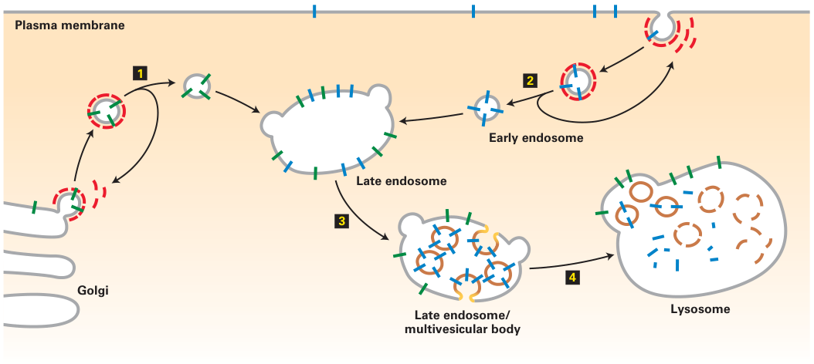
| Plasma membrane | 质膜 |
| Golgi | 高尔基体 |
| Late endosome/multivesicular body | 晚期内体/多囊体 |
| Lysosome | 溶酶体 |
| Late endosome | 晚期内体 |
| Early endosome | 早期内体 |
逆转录病毒以类似于多囊内体形成的过程从质膜出芽
向心出芽进入内体内部的囊泡，其拓扑结构与从病毒感染的细胞质膜出芽的包膜病毒颗粒相似。此外，最近的实验证明，这两类膜出芽事件都需要同一组蛋白质。事实上，这两个过程在机制细节上如此紧密地平行，以至于提示包膜病毒已经演化出机制，为自身目的招募内体向心出芽所用的细胞蛋白。
人类免疫缺陷病毒（HIV）是一种包膜逆转录病毒，它从被感染细胞的质膜出芽，这一过程由病毒Gag蛋白驱动，Gag蛋白是成熟病毒颗粒的主要结构组分。Gag蛋白与被感染细胞的质膜结合，约4000个Gag分子聚合成一个球形外壳，产生一种看起来像囊泡芽的结构，它突出于质膜之外。对HIV的突变研究揭示，Gag蛋白的N端区段是与质膜结合所必需的，而C端区段则是完整HIV颗粒缢断所必需的。例如，如果去掉编码Gag C端的病毒基因组部分，被感染细胞中会形成HIV芽，但不会发生缢断，因此没有游离的病毒颗粒被释放。
HIV出芽与向心出芽进入内体的囊泡使用同一套分子机器的第一个迹象，来自对ESCRT蛋白Tsg101与Gag蛋白C端结合的观察。后续发现清楚地确立了两个过程在机制上的平行关系。例如，Gag在病毒出芽过程中会被泛素化，而在Tsg101或Vps4发生突变的细胞中，HIV病毒芽会积累，但不能从膜上缢断（图14-34）。此外，当通过构建适当的杂合基因把来自细胞Hrs蛋白的一个区段加到截短的Gag蛋白上时，病毒颗粒的正常出芽和释放得以恢复。综合来看，这些结果表明Gag蛋白模拟了Hrs的功能，把ESCRT蛋白重定向到质膜，在那里它们可以参与病毒颗粒的出芽。
其他包膜逆转录病毒，如鼠白血病病毒和劳氏肉瘤病毒，也被证明其出芽需要ESCRT复合体，尽管每种病毒似乎都演化出了各自略有不同的机制，把ESCRT复合体招募到病毒出芽的位点。
自噬途径把胞质溶胶蛋白或整个细胞器运送到溶酶体
当细胞处于应激条件下，如饥饿时，它们有能力回收大分子以作为营养物质用于称为自噬（"吃自己"）的溶酶体降解过程。自噬途径始于一个扁平的双膜杯状结构的形成，它包裹胞质溶胶的一个区域或整个细胞器（如一个线粒体），形成一个自噬体，即自噬囊泡（图14-35）。自噬体的外膜可以与溶酶体融合，把一个由单层膜包被的大囊泡运送到溶酶体内部。溶酶体内的脂肪酶和蛋白酶把自噬体及其内容物降解成其分子组分，就像多囊内体的内容物被运送到溶酶体时它们所做的那样。随后，溶酶体膜中的氨基酸通透酶使游离氨基酸得以转运回胞质溶胶，用于合成新的蛋白质。
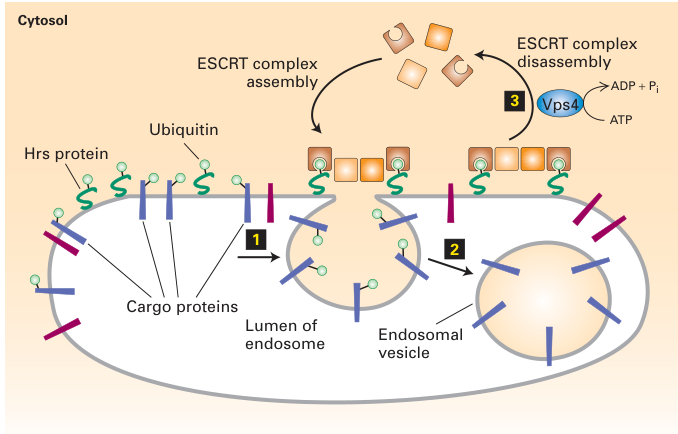
| Cytosol | 胞质溶胶 |
| Lumen of endosome | 内体腔 |
| ESCRT complex assembly | ESCRT复合体装配 |
| Ubiquitin | 泛素 |
| Endosomal vesicle | 内体囊泡 |
| Vps4 | Vps4 |
| ATP | ATP |
| ADP | ADP |
| Pi | Pi |
| ESCRT complex disassembly | ESCRT复合体解离 |
| Cargo proteins | 货物蛋白 |
| Hrs protein | Hrs蛋白 |
通过研究自噬途径有缺陷的突变体，科学家们已经鉴定出除饥饿时回收细胞组分之外、同样依赖自噬的其他过程。主要在果蝇和小鼠中进行的实验表明，自噬参与一种质量控制机制，清除那些已停止正常工作的细胞器。特别是，自噬途径能够靶向失去完整性、其内膜两侧不再有电化学梯度的功能失调线粒体。在某些细胞类型中，在宿主细胞胞质溶胶中增殖的病原细菌和病毒可以被导向自噬途径，在溶酶体中被消灭，这是宿主抵御感染的一种防御机制。
在上述每一个过程中，并且在所有真核生物中，自噬途径都分三个基本步骤进行。尽管这三个步骤各自的机制了解得还相当不清楚，但人们认为它们与本章讨论的囊泡运输基本机制有关。
自噬体成核 自噬体被认为起源于某个膜包被细胞器的一个片段。这种膜的来源一直难以追踪，因为已知没有任何整合膜蛋白是自噬体形成所必需的，而这类蛋白本来可以用来鉴定这种膜的来源。酵母中的研究表明，一些高尔基体运输有缺陷的突变体在自噬上也有缺陷，这提示自噬体最初来源于高尔基体的一个片段。饥饿诱导的自噬似乎是一个非特异性的过程，其中胞质溶胶的一个随机部分（包括细胞器）被自噬体包裹。在这些情况下，成核位点可能是随机的。在缺陷细胞器被自噬体包裹的情况下，细胞器表面必定存在某种信号或结合位点，以把自噬体的成核靶定到那里。
自噬体生长与完成 必须把新膜运送到自噬体膜上，这个杯状细胞器才能生长。这种生长可能是通过运输囊泡与自噬体膜的融合而发生的。在针对自噬缺陷的酵母突变体的遗传筛选中，已鉴定出约30种参与自噬体形成的蛋白质。其中之一是Atg8，如图14-35所示，它与脂质磷脂酰乙醇胺共价连接，因而附着到自噬体的胞质面。Atg8与膜囊泡的结合似乎是使囊泡能够与生长中的自噬体融合的关键步骤。
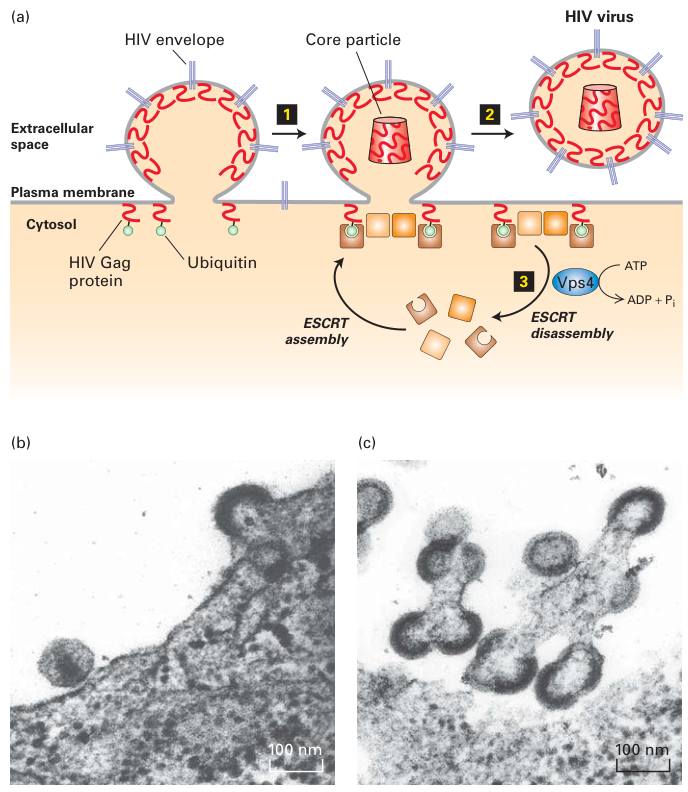
| Plasma membrane | 质膜 |
| Cytosol | 胞质溶胶 |
| Extracellular space | 细胞外空间 |
| HIV Gag protein | HIV Gag蛋白 |
| Ubiquitin | 泛素 |
| ESCRT assembly | ESCRT装配 |
| Core particle | 核心颗粒 |
| HIV virus | HIV病毒 |
| ATP | ATP |
| ADP | ADP |
| Pi | Pi |
| HIV envelope | HIV包膜 |
| Vps4 | Vps4 |
| ESCRT disassembly | ESCRT解离 |
含Atg8的囊泡与自噬体的融合，涉及在胞质溶胶中形成由Atg12、Atg5和Atg16组成的装配体。Atg12在结构上与泛素相似，一组与泛素结合酶相关的蛋白质负责把Atg12共价连接到Atg5上，其过程类似于把泛素共价连接到靶蛋白上（见图3-31）。随后，共价连接的Atg12-Atg5二聚体与Atg16共同装配，形成一个聚合物复合体，定位于生长中自噬体的部位。据认为，这个胞质溶胶复合体通过一种未知的机制，促使含Atg8的囊泡融合成杯状的自噬体。
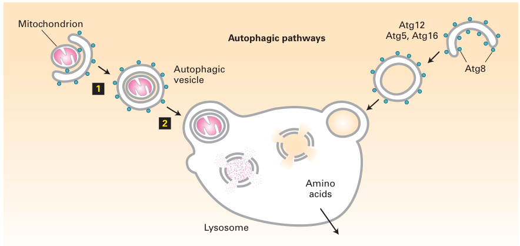
| Atg8 | Atg8 |
| Atg12 | Atg12 |
| Atg5 | Atg5 |
| Atg16 | Atg16 |
| Lysosome | 溶酶体 |
| Amino acids | 氨基酸 |
| Autophagic vesicle | 自噬囊泡 |
| Mitochondrion | 线粒体 |
| Autophagic pathways | 自噬途径 |
自噬体靶向与融合 已形成的自噬体的外膜被认为含有一组蛋白质，它们把它靶向到与溶酶体膜的融合。已发现有两种囊泡系连蛋白是自噬体与溶酶体融合所必需的，但相应的SNARE蛋白尚未被鉴定出来。自噬体与溶酶体的融合发生在Atg8经蛋白酶切割从自噬体膜上释放之后，而这一步蛋白酶解只有在自噬体完全形成封闭的双膜系统之后才发生。因此，Atg8蛋白似乎遮蔽了融合蛋白，防止自噬体与溶酶体发生过早融合。
访问LaunchPad可获取学习工具并进一步了解本章内容：展望未来、经典实验"跟随一个蛋白出细胞"、分析数据，以及包括视频、动画和测验在内的附加学习工具。
关键术语
复习题
- 1.帕拉德（Palade）及其同事的研究使用放射性标记氨基酸的脉冲-追踪标记和放射自显影，来显示胰腺腺泡细胞中新合成蛋白质所在的位置。这些早期实验为蛋白质合成和区室间运输提供了极其宝贵的信息。新方法已取代了这些早期方法，但任何研究这类蛋白质运输的测定仍然必须满足两个基本要求。这两个要求是什么？近期的实验方法如何满足这些标准？
- 2.囊泡出芽与包被蛋白有关。包被蛋白在囊泡出芽中起什么作用？包被蛋白是如何被募集到膜上的？哪些类型的分子可能被包进新形成的囊泡、哪些可能被排除在外？最广为人知的、可能参与囊泡缢断的蛋白质例子是什么？
- 3.用药物布雷菲德菌素A（BFA）处理细胞，会产生使高尔基体膜脱包被的效应，导致细胞内绝大多数高尔基体蛋白出现在内质网（ER）中。从这一观察结果，可以就包被蛋白除促进囊泡形成之外的作用做出哪些推断？预测ARF中哪种类型的突变可能产生与用BFA处理细胞相同的效应。
- 4.显微注射一种称为EAGE的抗体——它能与COPI β亚基的"铰链"区反应——会导致高尔基体酶在运输囊泡中积累，并抑制新合成的囊泡从内质网（ER）向质膜的顺向运输。该抗体对COPI活性有什么影响？请解释这些结果。
- 5.囊泡之间融合的特异性涉及两个彼此独立且先后发生的过程。请描述这两个过程中的第一个，以及它如何受GTP酶开关蛋白的调节。过表达一种卡在GTP结合状态的Rab5突变体，可能对早期内体的大小产生什么影响？
- 6.酵母基因Sec18编码NSF。该基因的突变会产生C类突变体。NSF在膜运输中的机制性作用是什么？正如其C类表型所表明的那样，为什么NSF突变会导致囊泡在看似只有分泌途径的一个阶段上积累？
- 7.前胶原合成的什么特征为高尔基体潴泡成熟模型提供了早期证据？
- 8.导致蛋白质在分泌途径中逆向运输的分选信号，有时称为回收序列。请列出已知的两种分别针对内质网（ER）可溶性蛋白和膜蛋白的回收序列。可溶性ER蛋白上存在回收序列，如何导致它从顺面高尔基体复合体被回收？请说明回收序列这一概念对潴泡成熟模型为何必不可少。
- 9.网格蛋白衔接蛋白（AP）复合体直接结合膜蛋白的胞质面，同时也与网格蛋白相互作用。已知的衔接蛋白复合体有哪四种？关于AP3的哪一项观察结果提示，网格蛋白是由衔接蛋白组成的核心包被的辅助蛋白？
- 10.被称为I细胞病的疾病，是遗传性人蛋白质靶向缺陷的经典例子，它影响一整类蛋白质：溶酶体的可溶性酶。I细胞病的分子缺陷是什么？为什么它会影响一整类蛋白质的靶向？还有哪些其他类型的突变可能产生相同的表型？
- 11.反式高尔基体网络是蛋白质和脂质离开高尔基体复合体时发生多种分选过程的场所。请比较并对比蛋白质向溶酶体的分选与把蛋白质包装进含胰岛素的调节型分泌囊泡的过程。请比较并对比MDCK细胞和肝细胞中蛋白质分选到基底外侧与顶端细胞表面的差异。
- 12.流感病毒和水疱性口炎病毒（VSV）从极性MDCK细胞出芽，这一现象对新合成的质膜蛋白分选到顶端结构域或基底外侧结构域揭示了什么？现在考虑以下结果：一段与VSV G蛋白胞质结构域序列相同的肽会抑制G蛋白靶向基底外侧表面，而对HA靶向顶端膜没有影响；但在其中唯一一个酪氨酸残基突变为丙氨酸后，所得的肽对G蛋白的基底外侧靶向没有影响。这告诉了你关于分选过程的什么信息？
- 13.请描述pH在调节甘露糖6-磷酸与M6P受体之间相互作用中的作用。为什么内体pH升高会导致新合成的溶酶体酶分泌到细胞外介质中？
- 14.向一个内体内部出芽形成多囊内体（a），与HIV病毒在细胞表面向外出芽（b），二者共享哪些机制特征？你希望设计一种HIV出芽的肽类抑制剂/竞争物，并决定在合成肽中模拟HIV Gag蛋白的一部分。HIV Gag蛋白的哪一部分是合乎逻辑的选择？这种抑制剂可能阻断哪一种正常的细胞过程？
- 15.吞噬途径和自噬途径承担两种根本不同的作用，但二者都把各自的囊泡运送到溶酶体。这两条途径之间的根本区别是什么？请描述自噬体形成与融合的三个基本步骤。
- 16.请比较并对比LDL和转铁蛋白受体介导的内吞途径中受体-配体相互作用的位置和pH敏感性。
- 17.导致家族性高胆固醇血症的LDL受体胞质结构域突变，揭示了受体介导的内吞途径的什么信息？
参考文献
研究分泌途径的技术
Beckers, C. J., et al. 1987. Semi-intact cells permeable to macromolecules: use in reconstitution of protein transport from the endoplasmic reticulum to the Golgi complex. Cell50:523–534.
Kaiser, C. A., and R. Schekman. 1990. Distinct sets of SEC genes govern transport vesicle formation and fusion early in the secretory pathway. Cell 61:723–733.
Lippincott-Schwartz, J., et al. 2001. Studying protein dynamics in living cells. Nat. Rev. Mol. Cell Biol. 2:444–456.
Novick, P., et al. 1981. Order of events in the yeast secretory pathway. Cell25:461–469.
Orci, L., et al. 1989. Dissection of a single round of vesicular transport: sequential intermediates for intercisternal movement in the Golgi stack. Cell 56:357–368.
Palade, G. 1975. Intracellular aspects of the process of protein synthesis. Science189:347–358.
囊泡出芽与融合的分子机制
Bonifacino, J. S., and B. S. Glick. 2004. The mechanisms of vesicle budding and fusion. Cell 116:153–166.
Hutagalung, A. H., and P. J. Novick. 2011. Role of Rab GTPases in membrane traffic and cell physiology. Physiol. Rev. 91:119–149.
Jahn, R., et al. 2003. Membrane fusion. Cell 112:519–533.
Kirchhausen, T. 2000. Three ways to make a vesicle. Nat. Rev. Mol. Cell Biol. 1:187–198.
McNew, J. A., et al. 2000. Compartmental specificity of cellular membrane fusion encoded in SNARE proteins. Nature 407:153–159.
Ostermann, J., et al. 1993. Stepwise assembly of functionally active transport vesicles. Cell 75:1015–1025.
Schimmöller, F., I. Simon, and S. Pfeffer. 1998. Rab GTPases, directors of vesicle docking. J. Biol. Chem.273:22161–22164.
Weber, T., et al. 1998. SNAREpins: minimal machinery for membrane fusion. Cell 92:759–772.
Wickner, W., and A. Haas. 2000. Yeast homotypic vacuole fusion: a window on organelle trafficking mechanisms. Annu. Rev. Biochem.69:247–275.
Zerial, M., and H. McBride. 2001. Rab proteins as membrane organizers. Nat. Rev. Mol. Cell Biol. 2:107–117.
分泌途径的早期阶段
Behnia, R., and S. Munro. 2005. Organelle identity and the signposts for membrane traffic. Nature 438:597–604.
Bi, X., et al. 2002. Structure of the Sec23/24-Sar1 pre-budding complex of the COPII vesicle coat. Nature 419:271–277.
Glick, B. S., and A. Nakano. 2009. Membrane traffic within the Golgi apparatus. Annu. Rev. Cell Dev. Biol.25:113–132.
Gurkan, C., et al. 2006. The COPII cage: unifying principles of vesicle coat assembly. Nat. Rev. Mol. Cell Biol.7:727–738.
Lee, M. C., et al. 2004. Bi-directional protein transport between the ER and Golgi. Annu. Rev. Cell Dev. Biol. 20:87–123.
Letourneur, F., et al. 1994. Coatomer is essential for retrieval of dilysine-tagged proteins to the endoplasmic reticulum. Cell 79:1199–1207.
Lord, C., S. Ferro-Novick, and E. A. Miller. 2013. The highly conserved COPII coat complex sorts cargo from the endoplasmic reticulum and targets it to the Golgi. Cold Spring Harb. Perspect. Biol.5:a013367.
Losev, E., et al. 2006. Golgi maturation visualized in living yeast. Nature 441:1002–1006.
Pelham, H. R. 1995. Sorting and retrieval between the endoplasmic reticulum and Golgi apparatus. Curr. Opin. Cell Biol. 7:530–535.
分泌途径的后期阶段
Bonifacino, J. S. 2004. The GGA proteins: adaptors on the move. Nat. Rev. Mol. Cell Biol.5:23–32.
Bonifacino, J. S., and E. C. Dell’Angelica. 1999. Molecular bases for the recognition of tyrosine-based sorting signals. J. Cell Biol.145:923–926.
Edeling, M. A., C. Smith, and D. Owen. 2006. Life of a clathrin coat: insights from clathrin and AP structures. Nat. Rev. Mol. Cell Biol.7:32–44.
Fotin, A., et al. 2004. Molecular model for a complete clathrin lattice from electron cryomicroscopy. Nature 432:573–579.
Ghosh, P., et al. 2003. Mannose 6-phosphate receptors: new twists in the tale. Nat. Rev. Mol. Cell Biol.4:202–213.
Mellman, I., and W. J. Nelson. 2008. Coordinated protein sorting, targeting and distribution in polarized cells. Nat. Rev. Mol. Cell Biol.9:833–845.
Schmid, S. 1997. Clathrin-coated vesicle formation and protein sorting: an integrated process. Annu. Rev. Biochem.66:511–548.
Simons, K., and E. Ikonen. 1997. Functional rafts in cell mem- branes. Nature 387:569–572.
Steiner, D. F., et al. 1996. The role of prohormone convertases in insulin biosynthesis: evidence for inherited defects in their action in man and experimental animals. Diabetes Metab.22:94–104.
Tooze, S. A., et al. 2001. Secretory granule biogenesis: rafting to the SNARE. Trends Cell Biol.11:116–122.
受体介导的内吞
Brown, M. S., and J. L. Goldstein. 1986. Receptor-mediated pathway for cholesterol homeostasis. Science 232:34–47. (Nobel Prize lecture.)
Kaksonen, M., C. P. Toret, and D. G. Drubin. 2006. Harnessing actin dynamics for clathrin-mediated endocytosis. Nat. Rev. Mol. Cell Biol.7:404–414.
Rudenko, G., et al. 2002. Structure of the LDL receptor extracellular domain at endosomal pH. Science 298:2353–2358.
将膜蛋白与胞质溶胶物质导向溶酶体
Geng, J., and D. J. Klionsky. 2008. The Atg8 and Atg12 ubiquitin-like conjugation systems in macroautophagy. EMBO Rep. 9:859–864.
Henne, W. M., N. J. Buchkovich, and S. D. Emr. 2011. The ESCRT pathway. Dev. Cell21:77–91.
Katzmann, D. J., et al. 2002. Receptor downregulation and multivesicular-body sorting. Nat. Rev. Mol. Cell Biol.3:893–905.
Lemmon, S. K., and L. M. Traub. 2000. Sorting in the en- dosomal system in yeast and animal cells. Curr. Opin. Cell Biol. 12:457–466.
Shintani, T., and D. J. Klionsky. 2004. Autophagy in health and disease: a double-edged sword. Science 306:990–995.
Sundquist, W. I., and H.-G. Kräusslich. 2012. HIV-1 assem- bly, budding, and maturation. Cold Spring Harb. Perspect. Med. 2:a006924.